<!doctype html>
<html lang="en">
<head>
  <meta charset="utf-8">
  <meta name="viewport" content="width=device-width, initial-scale=1">
  <title>arxiv digest — 2026-10-31</title>
  <style>
:root {
  --bg: #ffffff;
  --fg: #1f2328;
  --muted: #59636e;
  --border: #d0d7de;
  --card: #f6f8fa;
  --link: #0969da;
}
body {
  max-width: 980px;
  margin: 0 auto;
  padding: 2rem 1rem 5rem;
  font-family: -apple-system, BlinkMacSystemFont, "Segoe UI", Helvetica, Arial, sans-serif;
  line-height: 1.55;
  color: var(--fg);
  background: var(--bg);
}
a { color: var(--link); }
img { max-width: 100%; height: auto; }
pre, code { background: var(--card); border-radius: 6px; }
pre { padding: 1rem; overflow-x: auto; }
blockquote { border-left: 4px solid var(--border); padding-left: 1rem; color: var(--muted); }
details { margin: 0.6rem 0; }
summary { cursor: pointer; font-weight: 600; }
.paper-figures-scroll {
  display: flex;
  gap: 1rem;
  overflow-x: auto;
  overscroll-behavior-x: contain;
  padding: 0.75rem 0.25rem 1rem;
  margin: 1rem 0 1.25rem;
  border-top: 1px solid var(--border);
  border-bottom: 1px solid var(--border);
  scroll-snap-type: x proximity;
}
.paper-figure-card {
  flex: 0 0 min(260px, 72vw);
  scroll-snap-align: start;
  background: var(--card);
  border: 1px solid var(--border);
  border-radius: 12px;
  padding: 0.55rem;
}
.paper-figure-card img {
  display: block;
  width: 100%;
  max-height: 240px;
  object-fit: contain;
  background: white;
  border-radius: 8px;
}
.paper-figure-caption {
  display: block;
  margin-top: 0.5rem;
  color: var(--muted);
  font-size: 0.85rem;
}
.figure-strip-hint {
  color: var(--muted);
  font-size: 0.9rem;
  margin-bottom: -0.3rem;
}
</style>
  <script>
    window.MathJax = {
      tex: {
        inlineMath: [['$', '$'], ['\\(', '\\)']],
        displayMath: [['$$', '$$'], ['\\[', '\\]']],
        processEscapes: true,
        processEnvironments: true
      },
      options: {
        skipHtmlTags: ['script', 'noscript', 'style', 'textarea', 'pre', 'code'],
        ignoreHtmlClass: 'tex2jax_ignore',
        processHtmlClass: 'tex2jax_process'
      }
    };
  </script>
  <script id="MathJax-script" async
    src="https://cdn.jsdelivr.net/npm/mathjax@3/es5/tex-chtml.js"></script>
</head>
<body>
<header style="background-color: #333; color: white; padding: 15px; margin-bottom: 20px;">
  <h1 style="margin: 0; font-size: 24px;">
    <a href="https://ochelpan.github.io/arXiv_clean/" style="color: white; text-decoration: none;">Main</a>
  </h1>
</header>

<h1>Daily arXiv Report</h1>

<hr>
<p>
<a href="index.html">← Index</a>
 · <a href="papers_03.html">← Previous</a> · <a href="papers_05.html">Next →</a>
</p>
<hr>

<h2>Papers 61–80</h2>
<p><a id="paper-2610.38704"></a></p>
<h3 id="gravitational-anomaly-spectroscopy-of-a-kitaev-spin-liquid"><a href="http://arxiv.org/abs/2610.38704v1">Gravitational anomaly spectroscopy of a Kitaev spin liquid</a></h3>
<p><strong>Authors:</strong> Kumar Ghosh<br>
<strong>Type:</strong> both · <strong>Category:</strong> strongly correlated electrons · <strong>PDF:</strong> <a href="https://arxiv.org/pdf/2610.38704v1">https://arxiv.org/pdf/2610.38704v1</a><br>
<strong>Analysis basis:</strong> full PDF text, analyzed in chunks
<strong>Topic relevance:</strong> <code>analog quantum simulation</code> <strong>3/5</strong> · <code>quantum measurements</code> <strong>2/5</strong></p>
<div class="figure-strip-hint">↔ Scroll figures horizontally</div>
<div class="paper-figures-scroll">
<figure class="paper-figure-card">
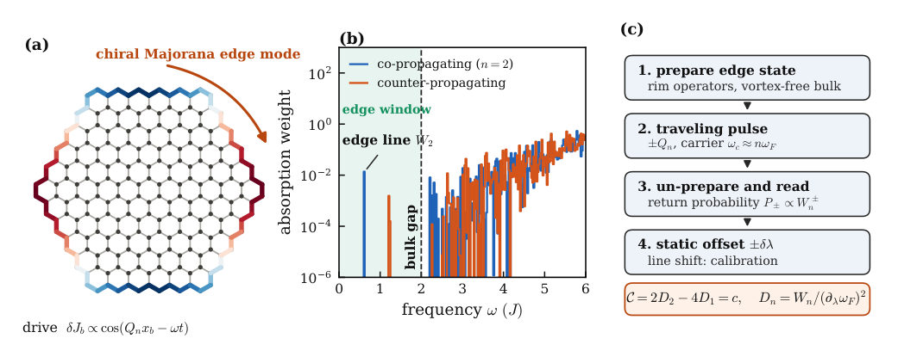
<figcaption class="paper-figure-caption"><b>Fig 1.</b> FIG. 1. Principle. (a) Hexagonal flake of the Kitaev honeycomb model (216 spins). The edge couplings are modulated by a traveling wave δJb ∝cos(Qnxb −ωt); the colors show a snapshot for n = 2. The edge hosts one chiral Majorana mode. (b) Exact absorption spectra of the two propagation directions on a 384-spin flake (κ = 0.3). Only the drive that co-propagates with the edge mode has a line below the bulk gap; its weight W2 is the input of the sum rule. The bulk continuum above the gap is common to both. (c) Processor protocol of Sec. VI.</figcaption>
</figure>
<figure class="paper-figure-card">
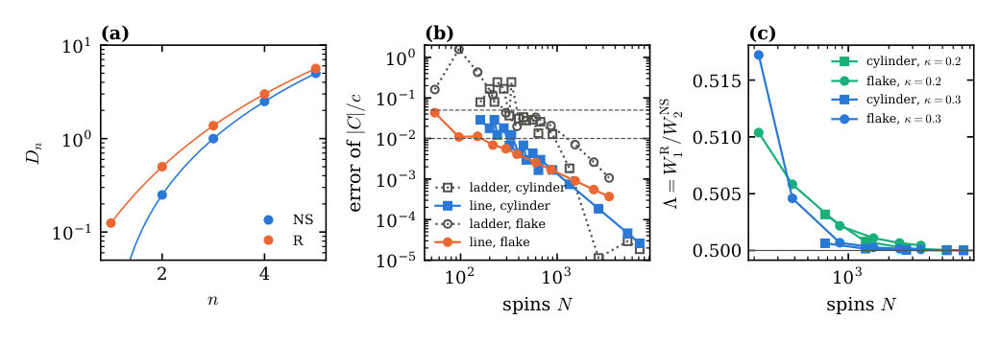
<figcaption class="paper-figure-caption"><b>Fig 2.</b> FIG. 2. The sum rule. (a) Calibrated weights Dn on the L = 512 cylinder (κ = 0.3, edge drive) in the NS and R sectors; lines are Eq. (5) with c = 1</figcaption>
</figure>
<figure class="paper-figure-card">
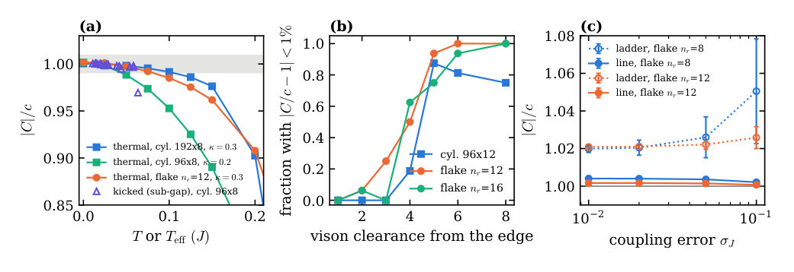
<figcaption class="paper-figure-caption"><b>Fig 3.</b> FIG. 3. Robustness. (a) |C|/c in thermal edge states (calibration in the ground state) and in kicked non-stationary states, against T or the temperature Teff with the same injected edge energy; the band marks ±1%. (b) Static vison gas at density 0.05 per plaquette: fraction of 16 random configurations with C within 1%, against the minimum distance of any vison from the edge. (c) Random coupling errors of relative size σJ (24 random samples; flakes, κ = 0.3): ladder against line calibration.</figcaption>
</figure>
<figure class="paper-figure-card">
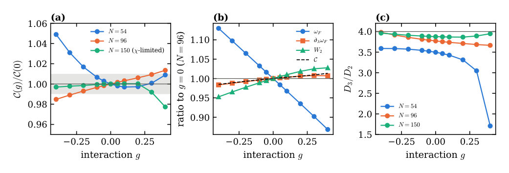
<figcaption class="paper-figure-caption"><b>Fig 4.</b> FIG. 4. Interacting edge Majoranas (DMRG on flakes, κ = 0.3, χ = 256). (a) C(g)/C(0); the band marks ±1%. The 150-spin scan is limited by χ (Table II). (b) On 96 spins: level spacing ωF , calibration ∂λωF and raw line weight W2 relative to g = 0, with C (dashed). (c) Internal check D3/D2; the conformal value is 4.</figcaption>
</figure>
<figure class="paper-figure-card">
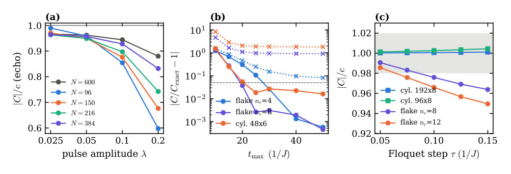
<figcaption class="paper-figure-caption"><b>Fig 5.</b> FIG. 5. Simulated experiment. (a) Echo readout on flakes (NS, σt = 4): |C|/c from the exact return probabilities against the pulse amplitude, with the line calibration from the same readout. (b) Correlator readout: error of C against the maximum evolution time, without decoherence (solid) and with an uncorrected decay rate γ = 0.03 (dotted). (c) The Floquet bond-layer circuit of Ref. [9] with V = 0.3: |C|/c (line calibration) against the Trotter step.</figcaption>
</figure>
</div>

<p><strong>Summary.</strong> This work presents a novel spectroscopic method to measure the chiral central charge, a topological invariant, in systems like the Kitaev spin liquid. By analyzing how edge couplings absorb energy from a weak modulation, the authors extract $c$ and the anyon's conformal spin. This provides a powerful, experimentally relevant diagnostic tool for characterizing topological quantum matter.</p>
<p><strong>Why it may be interesting.</strong> The technique provides a highly sensitive, spectroscopic probe for topological invariants ($c$), which is a key diagnostic tool for understanding fractionalized excitations and topological order in strongly correlated quantum materials.</p>
<details>
<summary>Detailed structure</summary>
<p><strong>Main problem.</strong> The paper aims to measure the chiral central charge ($c$), which quantifies the gravitational anomaly of a 2D topological phase, by analyzing spectroscopic signatures at the edge.</p>
<p><strong>Main result.</strong> The method successfully extracts the central charge ($c$) and the conformal spin ($h_\sigma$) for the Kitaev honeycomb spin liquid, showing robustness against disorder and interactions.</p>
<p><strong>Method.</strong> The central charge is extracted using a sum rule derived from the Virasoro algebra applied to the edge stress tensor, measured via the directional absorption of a weak edge coupling modulation.</p>
<p><strong>Model / system.</strong> The study focuses on the Kitaev honeycomb spin liquid, a model hosting chiral edge modes and non-Abelian Ising anyons. The physics is analyzed by mapping the system to free Majorana fermions in the gauge-invariant flux sector.</p>
<p><strong>Key observables.</strong> Chiral central charge ($c$), conformal spin ($h_\sigma$), and the ratio of line weights ($\Lambda = 4h_\sigma/c$).</p>
<p><strong>Important parameters / regimes.</strong> System size (up to 7168 spins), coupling modulation strength, and interaction strengths ($g$).</p>
<p><strong>Assumptions / limitations.</strong> The measurement assumes the edge theory is described by a chiral CFT and requires the bulk Majorana vacuum to be present for the measurement to be valid.</p>
<p><strong>Figures summary.</strong> Figures illustrate the principle using edge coupling modulation, the quantum processor protocol, and show the robustness of the measured quantities against various perturbations.</p>
<p><strong>Paper structure.</strong> The paper develops a theoretical sum rule based on the Virasoro algebra for the edge, details the spectroscopic measurement technique using modulated couplings, and verifies the results numerically using DMRG simulations for interacting edge Majoranas.</p>
</details>
<details>
<summary>Abstract</summary>
<p>The chiral central charge $c$ measures the gravitational anomaly of a two-dimensional topological phase. It fixes the heat current carried along the edge. So far, it has been accessed through thermal transport, where phonons complicate the signal, or through wave-function probes that need a pure ground state. Here we show that $c$ is a spectroscopic quantity of the edge. A weak modulation of the edge couplings that travel along the edge is absorbed according to the Virasoro algebra. Normalized by the response to a static change of the same couplings, the absorbed weights obey $D_n=2n\langle L_0\rangle+\frac{c}{12}(n^3-n)$, so that $\mathcal{C}\equiv2D_2-4D_1=c$ in any state of the ideal edge theory, thermal or not. The central charge thus appears in transition weights, although it cancels from excitation gaps. The ratio of line weights with and without a vison in the bulk, $Λ=4h_σ/c$, needs no calibration and fixes the conformal spin $h_σ$ of the non-Abelian Ising anyon. For the Kitaev honeycomb spin liquid we find $\mathcal{C}=0.49999$ and $h_σ=0.06250$ on 7168 spins. Calibrating with the shift of the measured line itself gives $c$ within about $1\%$ on 96 spins and within $1\%$ under $20\%$ random coupling errors. Interacting edge Majoranas in a fixed flux sector, treated with DMRG, keep $\mathcal{C}$ within $1.5\%$ while the edge velocity changes by $\pm13\%$. An exact simulation of a quantum-processor protocol, including the native Floquet circuit, returns $c$ within $3.5\%$ on 96 to 600 spins.</p>
</details>
<p><sub><a href="#top">↑ back to top</a></sub></p>

<p><a id="paper-2610.40059"></a></p>
<h3 id="influence-of-pairing-and-correlations-on-transport-properties-in-three-terminal-superconducting-nanostructure"><a href="http://arxiv.org/abs/2610.40059v1">Influence of pairing and correlations on transport properties in three-terminal superconducting nanostructure</a></h3>
<p><strong>Authors:</strong> G. Górski, V. Pokorný, T. Domański<br>
<strong>Type:</strong> theory · <strong>Category:</strong> strongly correlated electrons · <strong>PDF:</strong> <a href="https://arxiv.org/pdf/2610.40059v1">https://arxiv.org/pdf/2610.40059v1</a><br>
<strong>Analysis basis:</strong> full PDF text, analyzed in chunks
<strong>Topic relevance:</strong> <code>Keldysh / 2PI / non-Gaussian methods</code> <strong>3/5</strong> · <code>methods for driven-dissipative</code> <strong>2/5</strong></p>
<div class="figure-strip-hint">↔ Scroll figures horizontally</div>
<div class="paper-figures-scroll">
<figure class="paper-figure-card">
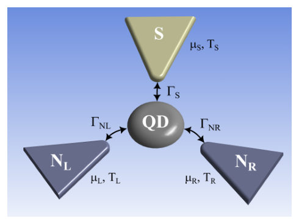
<figcaption class="paper-figure-caption"><b>Fig 1.</b> FIG. 1. Schematics of the three-terminal junction, consisting of the correlated quantum dot (QD) embedded between two metallic leads (NL, NR) and superconducting electrode (S).</figcaption>
</figure>
<figure class="paper-figure-card">
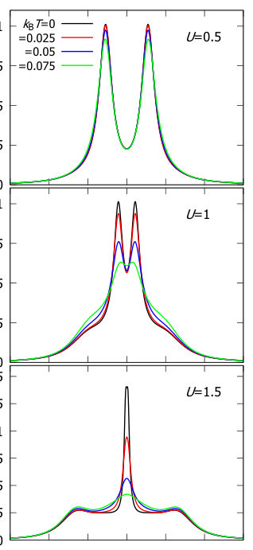
<figcaption class="paper-figure-caption"><b>Fig 2.</b> FIG. 2. Normalized spectral function of the half-filled QD obtained for several temperatures, using the model parame- ters ΓS = 1, ΓNL = ΓNR = 0.125, ∆= 2 and different values of U as indicated.</figcaption>
</figure>
<figure class="paper-figure-card">
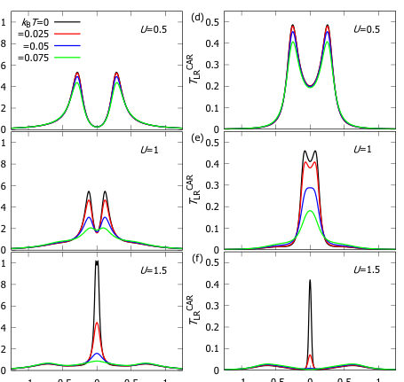
<figcaption class="paper-figure-caption"><b>Fig 3.</b> FIG. 3. Transmittance of the ET and CAR channels obtained for the half-filled QD, ε = −U</figcaption>
</figure>
<figure class="paper-figure-card">
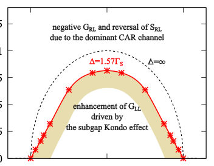
<figcaption class="paper-figure-caption"><b>Fig 4.</b> FIG. 4. Diagram obtained for ΓN = 0, showing the singlet- double phase boundary for ∆= ∞(black dashed line) and for finite pairing gap (red line with points) Ref. [12]. In the case ΓN ̸= 0 relevant to out setup the quantum phase tran- sition evolves into crossover (marked in color). We indicate the regions where the negative nonlocal conductance and the reversed Seebeck coefficients occur due to the dominant CAR transport channel which occur on the BCS-singlet side, and the subgap Kondo effect which strongly enhances the local conductance in the crossover region [23, 24].</figcaption>
</figure>
<figure class="paper-figure-card">
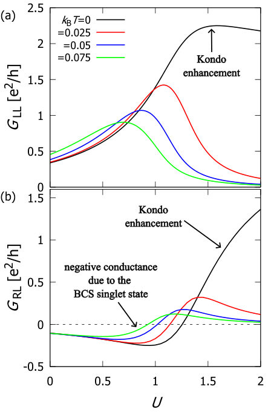
<figcaption class="paper-figure-caption"><b>Fig 5.</b> FIG. 5. Variation of the (a) local GLL and (b) nonlocal GRL linear conductance with respect to the interaction potential U obtained for several temperatures (indicated in legend). Results are obtained for the half-filled QD, ε = −U</figcaption>
</figure>
</div>

<p><strong>Summary.</strong> This theoretical work analyzes charge transport in a superconducting nanostructure containing a correlated quantum dot. By applying linear response theory, the authors map out how electron-electron correlations and superconducting pairing manifest in measurable quantities like conductance and thermopower. The results provide a clear diagnostic tool to distinguish between different ground state configurations, such as the BCS singlet state versus the Kondo doublet state.</p>
<p><strong>Why it may be interesting.</strong> The interplay between superconductivity (pairing) and strong correlations (Kondo physics) in nanoscale devices is a frontier area in condensed matter physics, directly relevant to understanding superconducting spintronics and quantum transport.</p>
<details>
<summary>Detailed structure</summary>
<p><strong>Main problem.</strong> The study investigates how the interplay between induced on-dot pairing (superconductivity) and electron correlation effects influences the local and nonlocal charge transport properties in a three-terminal nanostructure.</p>
<p><strong>Main result.</strong> The calculations predict distinct signatures: negative nonlocal conductance and Seebeck coefficient reversal in the BCS singlet state due to crossed Andreev scattering, while the Kondo effect is visible on the doublet side via conductance enhancement.</p>
<p><strong>Method.</strong> The analysis employs linear response theory, utilizing the Dyson equation framework to calculate transport coefficients by treating correlation effects perturbatively via the self-energy.</p>
<p><strong>Model / system.</strong> The system is a correlated quantum dot (QD) modeled by the Anderson impurity Hamiltonian, coupled to two normal metallic leads and one superconducting electrode. The model incorporates Coulomb repulsion (U) and the superconducting pairing gap (Delta).</p>
<p><strong>Key observables.</strong> Local and nonlocal conductance ($G$), thermopower (Seebeck coefficient $S$), and the spectral function $A(\omega)$.</p>
<p><strong>Important parameters / regimes.</strong> The key regimes include the BCS-type singlet ground state, the Kondo regime (doublet side), and the crossover region between them, controlled by parameters like U, Delta, and temperature T.</p>
<p><strong>Assumptions / limitations.</strong> The primary approximation involves treating correlation effects perturbatively via the self-energy, which is assumed reliable for studying the Kondo effect and parity transition.</p>
<p><strong>Figures summary.</strong> Figures illustrate the spectral function transition from BCS-type peaks to the Kondo Abrikosov-Suhl peak, and diagrams show the phase boundary between singlet and doublet configurations.</p>
<p><strong>Paper structure.</strong> The paper builds from defining the three-terminal setup and the underlying Hamiltonian, progresses through the application of linear response theory to derive transport currents, and concludes by analyzing the specific signatures of the Kondo effect and pairing interactions in the resulting conductance and thermopower.</p>
</details>
<details>
<summary>Abstract</summary>
<p>We study the local and nonlocal charge transport properties of three-terminal nanostructure, consisting of the correlated quantum dot embedded between two metallic electrodes and superconductor. Using the linear response theory, we analyze interplay of the induced on-dot pairing with the correlation effects, inspecting their influence on the conductance and thermopower. Our calculations predict negative values of the nonlocal conductance and reversal of the Seebeck coefficient when the quantum dot ground state is represented by the BCS-type singlet configuration. These phenomena are realized when the subgap charge transport is predominantly contributed by the crossed Andreev scattering. In contrast, on the doublet side, we obtain signatures for the Kondo effect manifested by the low-temperature enhancement of the charge conductance and clearly evident in the thermopower. Such temperature-dependent local and nonlocal transport properties can unambiguously identify the specific configuration of the correlated quantum dot and reveal the rich physics emerging in the doublet-to-singlet crossover region.</p>
</details>
<p><sub><a href="#top">↑ back to top</a></sub></p>

<p><a id="paper-2610.39361"></a></p>
<h3 id="metastability-collective-excitations-and-traveling-states-of-one-dimensional-spin-orbit-coupled-quantum-droplets"><a href="http://arxiv.org/abs/2610.39361v1">Metastability, collective excitations, and traveling states of one-dimensional spin-orbit-coupled quantum droplets</a></h3>
<p><strong>Authors:</strong> Harsimranjit Kaur, Ritu, Rajat, Kuldeep Suthar, Sandeep Gautam<br>
<strong>Type:</strong> theory · <strong>Category:</strong> quantum gases · <strong>PDF:</strong> <a href="https://arxiv.org/pdf/2610.39361v1">https://arxiv.org/pdf/2610.39361v1</a><br>
<strong>Analysis basis:</strong> full PDF text, analyzed in chunks
<strong>Topic relevance:</strong> <code>analog quantum simulation</code> <strong>3/5</strong> · <code>Keldysh / 2PI / non-Gaussian methods</code> <strong>2/5</strong></p>
<div class="figure-strip-hint">↔ Scroll figures horizontally</div>
<div class="paper-figures-scroll">
<figure class="paper-figure-card">
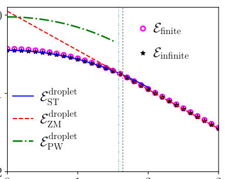
<figcaption class="paper-figure-caption"><b>Fig 1.</b> FIG. 1. Energy per particle E as a function of the Rabi coupling strength Ωfor a droplet with g↑↓= −0.9. Solid black stars represent the numerical ground-state energy per particle for the infinite-size system, while open magenta circles show the corresponding results for a finite-size droplet with N = 300. The lines show variational estimates of E given by Eq. (21) (dashed red), Eq. (31) (dash-dotted green), and Eq. (36) (solid blue). As discussed in the text, E obtained by the variational method is plotted over the ranges 0 ≤Ω&lt; 2 for the ST phase and 0 ≤Ω&lt; 1.54 for the PW phase. The vertical lines at Ωvar cr = 1.58 (light blue) and Ωnum cr = 1.64 (gray) indicate the boundary between the ST...</figcaption>
</figure>
<figure class="paper-figure-card">
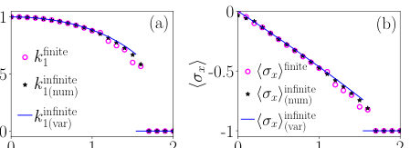
<figcaption class="paper-figure-caption"><b>Fig 2.</b> FIG. 2. (a) Condensate momentum k1 and (b) transverse spin po- larization ⟨σx⟩as a function of the Raman coupling Ω. The solid blue line represents the results from the variational approach for the infinite droplet, whereas the symbols represent the numerically ob- tained values for the infinite droplet (black stars) and the finite-size droplet (open magenta circles). Here, we consider N = 300 and g↑↓= −0.9. The differences close to the ST-ZM boundary are due to higher-order harmonics and finite-size effects.</figcaption>
</figure>
<figure class="paper-figure-card">
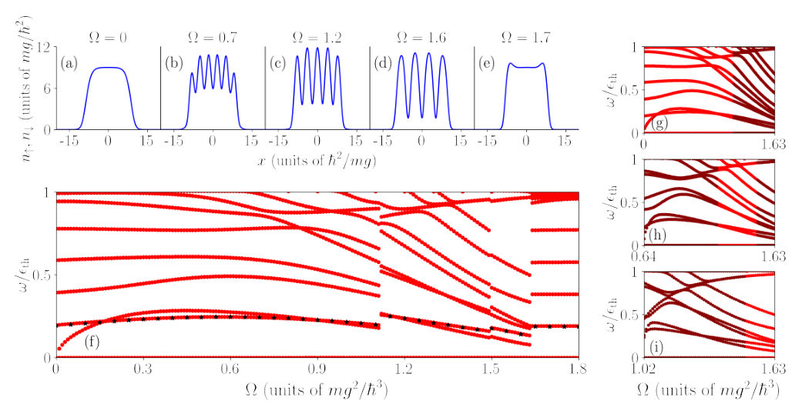
<figcaption class="paper-figure-caption"><b>Fig 3.</b> FIG. 3. (a)-(e) Ground-state component densities n↑=n↓at representative Raman coupling for N = 300 and g↑↓= −0.9. At Ω= 0, the density has zero stripe contrast; increasing Ωproduces distinct stripe-number ground-state density profiles before the transition to the ZM droplet. (f) Excitation spectrum below the particle emission threshold as a function of Ω; black stars mark the density breathing modes. Panels (g)–(i) resolve the spectra of six-, five-, and four-stripe stationary solutions, respectively, including the regions where they appear as higher- energy metastable solutions (darkred markers). The discontinuities in (f) coincide with the changes in the ground-state density...</figcaption>
</figure>
<figure class="paper-figure-card">
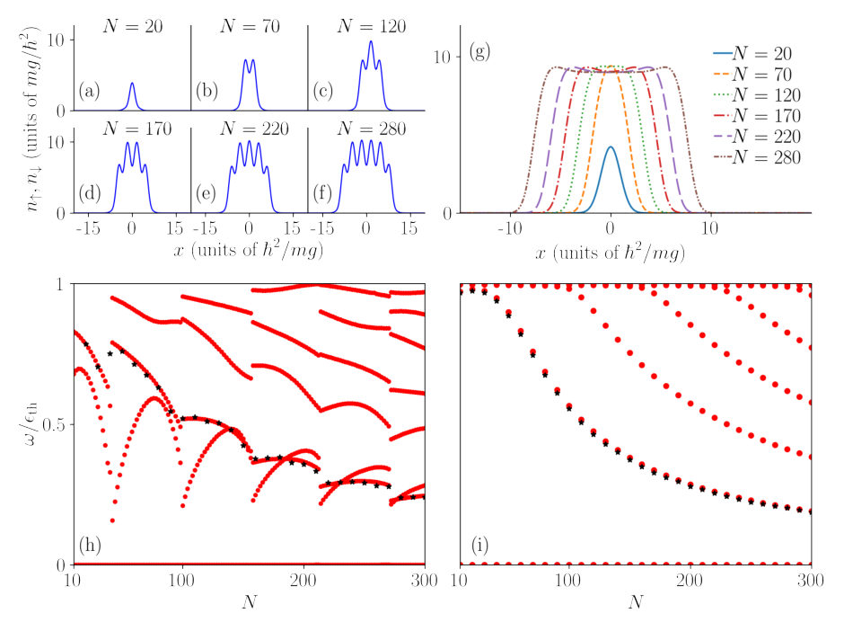
<figcaption class="paper-figure-caption"><b>Fig 4.</b> FIG. 4. Ground-state density profiles of quantum droplets for different numbers of atoms in (a)–(f) the stripe phase at Ω= 0.5 and (g) the ZM phase at Ω= 2. The excitations below the particle-emission threshold as a function of N are shown for (h) Ω= 0.5 and (i) Ω= 2. Here, g↑↓= −0.9. The black stars in (h) and (i) correspond to the largest peak frequencies in the Fourier transform of the oscillations in ⟨x2⟩during the real-time dynamics of the ground state generated by suitably perturbing the Hamiltonian as discussed in the text.</figcaption>
</figure>
<figure class="paper-figure-card">
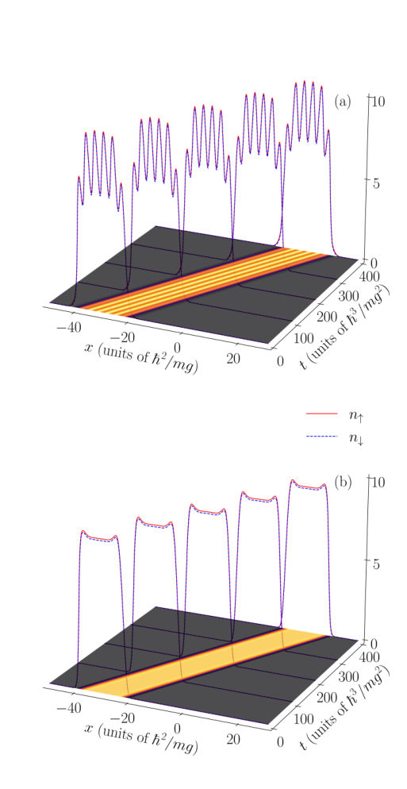
<figcaption class="paper-figure-caption"><b>Fig 5.</b> FIG. 5. Density profiles of SO-coupled droplets with N = 300 and g↑↓= −0.9 moving at velocity v = 0.1ˆx at different times for (a) a stripe droplet at Ω= 0.5 and (b) an unmodulated droplet at Ω= 2. The solid red and dashed blue lines represent the two component densities at successive times. The profiles translate while retaining their characteristic internal structures over the displayed time inter- val. The contour plots of total density are also shown in the x-t plane.</figcaption>
</figure>
</div>

<p><strong>Summary.</strong> This paper theoretically explores the complex phase diagram of 1D spin-orbit-coupled Bose-Bose mixtures. It determines that the system supports stable traveling droplet phases, characterized by finite magnetization, which are found by analyzing the system in the droplet's comoving frame. The methodology combines variational calculations with Bogoliubov analysis to map out these quantum phases and their excitations.</p>
<p><strong>Why it may be interesting.</strong> This work provides detailed theoretical insights into how spin-orbit coupling and interactions stabilize exotic quantum phases (like traveling droplets) in ultracold atomic mixtures, which is highly relevant to modern AMO research.</p>
<details>
<summary>Detailed structure</summary>
<p><strong>Main problem.</strong> The study investigates the static and traveling droplet phases, collective excitations, and stability of one-dimensional spin-orbit-coupled Bose-Bose mixtures.</p>
<p><strong>Main result.</strong> The system exhibits distinct ground-state phases (stripe, plane-wave) in the comoving frame, and the analysis confirms the stability of these traveling droplet phases through Bogoliubov analysis.</p>
<p><strong>Method.</strong> The study employs variational analysis for infinite systems, numerical simulations for finite droplets, and Bogoliubov-de Gennes (BdG) analysis in the comoving frame to determine excitation spectra.</p>
<p><strong>Model / system.</strong> The system is a 1D Bose-Bose mixture incorporating spin-orbit coupling and a Lee-Huang-Yang correction, governed by coupled Gross-Pitaevskii equations.</p>
<p><strong>Key observables.</strong> Ground-state energy, density profiles, longitudinal and transverse spin polarizations ($\langle\sigma_z
angle, \langle\sigma_x
angle$), and the excitation spectrum ($\omega$).</p>
<p><strong>Important parameters / regimes.</strong> Rabi coupling strength ($\Omega$), SO coupling strength ($k_R$), and the LHY correction strength ($\alpha$).</p>
<p><strong>Assumptions / limitations.</strong> Approximations are made regarding the LHY correction, and the analysis relies on variational ansatze and linearization around the ground state.</p>
<p><strong>Figures summary.</strong> Figures illustrate density profiles of moving droplets, ground-state properties ($\langle\sigma_x
angle, \langle\sigma_z
angle, k_1$) versus $\Omega$, and the excitation spectrum across phase transitions.</p>
<p><strong>Paper structure.</strong> The paper progresses from analyzing static droplet phases via variational methods to investigating the dynamics and stability of moving droplets by transforming to the comoving frame and performing Bogoliubov analysis.</p>
</details>
<details>
<summary>Abstract</summary>
<p>We study the static and traveling droplet phases of spin-orbit coupled, one-dimensional Bose-Bose mixtures with a Lee-Huang-Yang correction. For the static droplets, employing a variational analysis for an infinitely extended mixture, we show that the system can feature two ground-state droplet phases: a stripe droplet phase up to a critical Rabi coupling strength, at which it undergoes a first-order transition to a zero-momentum droplet phase. The variational results for the ground-state properties are shown to be in good agreement with numerical solutions for droplets in the thermodynamic limit as well as finite-size droplets in the "flat-top regime". For finite-size droplets, the stripe phase can feature multiple stationary states with different numbers of peaks in their stripe density patterns. The calculation of the excitation spectrum for these stationary states confirms their stability. To study the moving droplets, we investigate the ground-state phases of the system in the droplet's comoving frame. We show that in the comoving frame, droplets acquire a finite longitudinal magnetization. As a consequence, the phase diagram features two distinct phases: a traveling stripe droplet and a plane-wave droplet. The real-time evolution of these droplets in the space-fixed frame, complemented by the Bogoliubov analysis in the comoving frame, illustrates the stability of these traveling droplet phases.</p>
</details>
<p><sub><a href="#top">↑ back to top</a></sub></p>

<p><a id="paper-2610.40460"></a></p>
<h3 id="static-dipolar-impurity-in-a-fermi-gas"><a href="http://arxiv.org/abs/2610.40460v1">Static dipolar impurity in a Fermi gas</a></h3>
<p><strong>Authors:</strong> Eugen Dizer, Xin Chen, Richard Schmidt, Arthur Christianen<br>
<strong>Type:</strong> theory · <strong>Category:</strong> quantum gases · <strong>PDF:</strong> <a href="https://arxiv.org/pdf/2610.40460v1">https://arxiv.org/pdf/2610.40460v1</a><br>
<strong>Analysis basis:</strong> full PDF text, analyzed in chunks
<strong>Topic relevance:</strong> <code>analog quantum simulation</code> <strong>3/5</strong> · <code>Keldysh / 2PI / non-Gaussian methods</code> <strong>2/5</strong></p>
<div class="figure-strip-hint">↔ Scroll figures horizontally</div>
<div class="paper-figures-scroll">
<figure class="paper-figure-card">
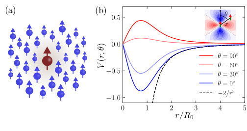
<figcaption class="paper-figure-caption"><b>Fig 1.</b> Figure 1. Static dipolar impurity in a Fermi gas. (a) A static dipolar impurity (red) is immersed in a three-dimensional Fermi gas (blue), and coupled via dipole-dipole interactions. (b) Regularized dipole–dipole potential V (r, θ) between the bath fermions and the impurity, shown for several angles θ to the polarization axis. The inset shows the model potential as a function of r and θ.</figcaption>
</figure>
<figure class="paper-figure-card">
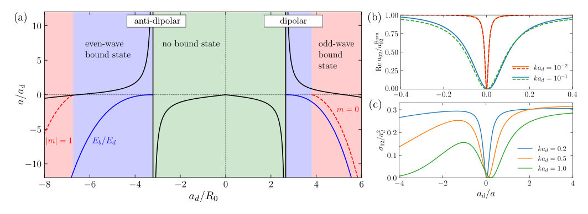
<figcaption class="paper-figure-caption"><b>Fig 2.</b> Figure 2. (a) The s-wave scattering length a/ad as a function of ad/R0. Regions without bound states (green), with an even-wave bound state (blue), and with an odd-wave bound state (red) are highlighted. The corresponding bound-state energies Eb/Ed are indicated by blue solid (even-wave) and red dashed (odd-wave) curves. For ad &gt; 0, the odd-wave bound state belongs to the m = 0 angular-momentum sector, whereas for ad &lt; 0, it appears twice in the |m| = 1 sector. (b) The real part of the dipole scattering length Re a02/aBorn 02 as a function of ad/a for different collision energies kad. A characteristic dip appears at the s-wave resonance. The behavior is well captured by the analytic...</figcaption>
</figure>
<figure class="paper-figure-card">
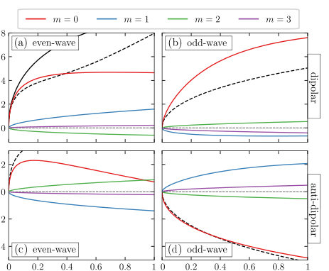
<figcaption class="paper-figure-caption"><b>Fig 3.</b> Figure 3. Sum of eigenphase shifts P</figcaption>
</figure>
<figure class="paper-figure-card">
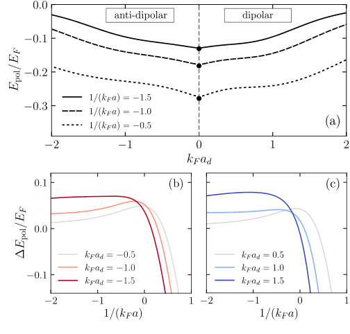
<figcaption class="paper-figure-caption"><b>Fig 4.</b> Figure 4. Dipolar polaron energy from Fumi’s theorem. (a) Polaron energy Epol in units of EF as a function of dipole strength kF ad, for three inverse scattering lengths 1/(kF a). The black points denote the results from contact interactions. (b,c) Relative polaron energy ∆Epol(ad) = Epol(ad)−Epol(0) as a function of 1/(kF a) for several dipole strengths kF ad, on the anti-dipolar (b) and dipolar (c) side.</figcaption>
</figure>
<figure class="paper-figure-card">
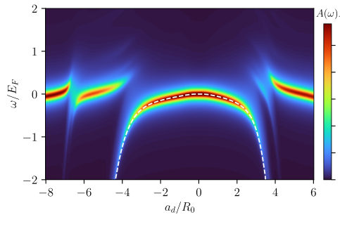
<figcaption class="paper-figure-caption"><b>Fig 5.</b> Figure 5. Impurity spectrum A(ω)EF at fixed kF ad = 1 as a function of the inverse short-range cutoff ad/R0, which tunes the depth of the model potential and hence the bound-state content [see Fig. 2(a)]. The polaron energy from Fumi’s the- orem, Eq. (22), is overlaid as a white dashed line.</figcaption>
</figure>
</div>

<p><strong>Summary.</strong> This paper theoretically analyzes the interaction between a static dipolar impurity and a Fermi gas, focusing on how anisotropic dipolar forces modify the system's many-body properties. Key findings include the prediction of a doubly occupied ground state structure and the weakening of the orthogonality catastrophe due to long-range interactions. The results are directly applicable to experiments using ultracold polar molecules.</p>
<p><strong>Why it may be interesting.</strong> This work is highly relevant as it tackles the complex, anisotropic nature of dipolar interactions in ultracold quantum gases, providing concrete theoretical predictions for experimental verification using polar molecules.</p>
<details>
<summary>Detailed structure</summary>
<p><strong>Main problem.</strong> To investigate how anisotropic dipolar interactions fundamentally alter the few-body scattering properties and the resulting polaron physics when a static dipolar impurity is immersed in a Fermi gas.</p>
<p><strong>Main result.</strong> The impurity spectrum is found to be a convolution of even- and odd-wave contributions, leading to a ground state with simultaneously occupied even- and odd-wave bound states, and long-range interactions weaken the Anderson orthogonality catastrophe.</p>
<p><strong>Method.</strong> The study employs generalized Fumi's theorem to relate energy shifts to scattering phase shifts, and utilizes functional determinant approaches and partial wave expansions to calculate the polaron energy.</p>
<p><strong>Model / system.</strong> The system modeled is a static dipolar impurity interacting with a non-interacting Fermi gas. The interaction is governed by a model dipolar potential, leading to a Hamiltonian analyzed via scattering theory.</p>
<p><strong>Key observables.</strong> Polaron energy ($E_{	ext{pol}}$), scattering length ($a$), scattering phase shifts ($\delta(E)$), and the impurity spectral function $A(\omega)$.</p>
<p><strong>Important parameters / regimes.</strong> Dipole length, Fermi energy ($E_F$), and the ratio of dipole strength to characteristic energy scales ($k_F |a_d|$).</p>
<p><strong>Assumptions / limitations.</strong> The analysis often compares results derived from the full theory against limitations of variational ansatze, such as the one-particle-hole (1ph) excitation approximation.</p>
<p><strong>Figures summary.</strong> Figures illustrate the dependence of the scattering length on dipole strength, the universal shapes of scattering amplitudes near resonances, and the polaron energy shift as a function of dipole strength.</p>
<p><strong>Paper structure.</strong> The paper progresses from establishing the theoretical framework using Fumi's theorem and scattering theory, calculating the polaron energy, analyzing the spectral function via determinant methods, and finally discussing the implications of long-range dipolar interactions.</p>
</details>
<details>
<summary>Abstract</summary>
<p>We consider a static dipolar impurity immersed in a Fermi gas and show how dipolar interactions shape both the few-body scattering properties and the resulting polaron physics. Using Fumi's theorem, we connect the anisotropic phase shifts directly to the ground-state energy, and compute the exact impurity spectrum via the functional determinant approach. The resulting spectrum is a convolution of independent even- and odd-wave contributions, giving rise to a ground state with simultaneously occupied even- and odd-wave bound states whose separation is tunable via the dipole length. A variational ansatz limited to one particle-hole excitation fails to capture this doubly occupied ground state. We further find that long-range dipolar interactions weaken Anderson's orthogonality catastrophe, reducing the power-law decay of the quasiparticle weight. These effects can be tested with ultracold polar molecules, where microwave shielding and independent tunability of interactions enable experimental access to the predicted regimes.</p>
</details>
<p><sub><a href="#top">↑ back to top</a></sub></p>

<p><a id="paper-2610.39986"></a></p>
<h3 id="thermodynamic-crossovers-in-supercritical-matter-one-no-one-and-one-hundred-thousand"><a href="http://arxiv.org/abs/2610.39986v1">Thermodynamic Crossovers in Supercritical Matter: One, No One, and One Hundred Thousand</a></h3>
<p><strong>Authors:</strong> Yang Xu, Matteo Baggioli<br>
<strong>Type:</strong> theory · <strong>Category:</strong> statistical mechanics · <strong>PDF:</strong> <a href="https://arxiv.org/pdf/2610.39986v1">https://arxiv.org/pdf/2610.39986v1</a><br>
<strong>Analysis basis:</strong> full PDF text, analyzed in chunks
<strong>Topic relevance:</strong> <code>non-equilibrium universality</code> <strong>3/5</strong> · <code>Keldysh / 2PI / non-Gaussian methods</code> <strong>1/5</strong> · <code>analog quantum simulation</code> <strong>1/5</strong></p>
<div class="figure-strip-hint">↔ Scroll figures horizontally</div>
<div class="paper-figures-scroll">
<figure class="paper-figure-card">
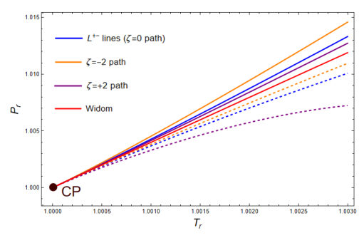
<figcaption class="paper-figure-caption"><b>Fig 1.</b> FIG. 1. Nonuniqueness of thermodynamic crossover lines in the van der Waals model. For each choice of thermodynamic paths, the solid and dashed curves denote the two branches of maxima of the volume susceptibility. The blue curves are the L± lines of Ref. [12] (ζ = 0), while the purple and orange curves correspond to ζ = +2 and ζ = −2, respectively, with ζ defined with respect to the unnormalized field h of Eq. (51). The red curve is the Widom-type line obtained from isother- mal maxima [9], which is approached by one branch of each pair in the limit |ζ| →∞, while the other branch moves away from it. All curves emanate from the critical point (CP) and exhibit the expected critical scaling...</figcaption>
</figure>
</div>

<p><strong>Summary.</strong> This theoretical paper argues that the concept of a unique thermodynamic crossover boundary in supercritical fluids is ill-defined. By analyzing scaling laws, the authors show that multiple, distinct crossover lines can satisfy the requirements of universal critical behavior. Ultimately, the location of these boundaries depends entirely on the specific operational path chosen to probe the system, suggesting that no single, intrinsic boundary exists beyond the critical point.</p>
<p><strong>Why it may be interesting.</strong> While focused on classical thermodynamics, the concept of protocol-dependent definitions of boundaries and the distinction between intrinsic singularities and operational projections is highly relevant to defining quantum phase transitions or crossover regimes in quantum systems.</p>
<details>
<summary>Detailed structure</summary>
<p><strong>Main problem.</strong> The paper investigates the fundamental ambiguity in defining unique thermodynamic crossover boundaries in the supercritical region of matter.</p>
<p><strong>Main result.</strong> Universal critical behavior alone is insufficient to select a unique crossover boundary, as infinitely many paths satisfy the required scaling laws, making the definition dependent on the operational probing protocol.</p>
<p><strong>Method.</strong> The authors use Renormalization Group scaling analysis and examine the extremum conditions of thermodynamic response functions along various defined thermodynamic paths.</p>
<p><strong>Model / system.</strong> The study focuses on supercritical matter, using the liquid-gas transition as the paradigmatic example, and draws parallels with the critical behavior described by the Ising model.</p>
<p><strong>Key observables.</strong> Crossover lines ($L^\pm$), thermodynamic response functions (e.g., heat capacity, compressibility), and the width of the intermediate crossover region.</p>
<p><strong>Important parameters / regimes.</strong> Critical exponents ($eta, \delta$), the path parameter $\zeta$, and the reduced temperature/field variables ($t, h$).</p>
<p><strong>Assumptions / limitations.</strong> The analysis explores assumptions regarding the probing path (protocol) and compares results derived from different choices of paths, such as those respecting $Z_2$ symmetry.</p>
<p><strong>Figures summary.</strong> Not specified (Analysis relies on derived equations and functional forms rather than described figures).</p>
<p><strong>Paper structure.</strong> The paper progresses by first establishing the problem of non-uniqueness, deriving the general form of crossover lines from scaling arguments, demonstrating the path dependence of these lines, and finally contrasting this operational dependence with the intrinsic nature of true critical singularities.</p>
</details>
<details>
<summary>Abstract</summary>
<p>Beyond a critical point, two thermodynamic phases become continuously connected, without being separated by any thermodynamic singularity. The paradigmatic example is the liquid-gas transition, where several criteria have been proposed to distinguish liquid-like and gas-like regimes within the supercritical region. Recently, a pair of thermodynamic crossover lines, $L^\pm$, was introduced to address a proposed incompatibility of previous definitions with the universal critical behavior of the Ising model. These lines divide the supercritical region into three regimes, meet only at the critical point, and obey the expected critical scaling laws. Here, we demonstrate that these requirements do not uniquely determine the crossover boundaries. Instead, infinitely many pairs of lines satisfy the same conditions, with different choices of thermodynamic paths selecting different crossover boundaries. We further show that the Lee-Yang formalism, despite providing an intrinsic characterization of critical singularities, does not resolve this ambiguity in defining real-axis crossover boundaries. Restricting to regular probing paths that respect the $Z_2$ symmetry of the critical point recovers the Widom and $L^\pm$ prescriptions asymptotically. This restriction, however, is a choice of protocol rather than a property of the system, and even then two inequivalent prescriptions survive. Our results demonstrate that universal critical behavior alone does not select privileged supercritical thermodynamic crossover boundaries. While such lines may identify physically meaningful changes in thermodynamic, structural, or transport properties, their precise locations and the widths of the regions they delimit remain dependent on the operational criteria used to define them.</p>
</details>
<p><sub><a href="#top">↑ back to top</a></sub></p>

<p><a id="paper-2610.38893"></a></p>
<h3 id="universality-in-randomly-connected-neural-networks-old-and-new-on-a-conjecture-of-geman-and-hwang"><a href="http://arxiv.org/abs/2610.38893v1">Universality in randomly connected neural networks: old and new on a conjecture of Geman and Hwang</a></h3>
<p><strong>Authors:</strong> Jonathan Touboul<br>
<strong>Type:</strong> theory · <strong>Category:</strong> disordered systems and neural networks · <strong>PDF:</strong> <a href="https://arxiv.org/pdf/2610.38893v1">https://arxiv.org/pdf/2610.38893v1</a><br>
<strong>Analysis basis:</strong> full PDF text, analyzed in chunks
<strong>Topic relevance:</strong> <code>non-equilibrium universality</code> <strong>3/5</strong> · <code>Keldysh / 2PI / non-Gaussian methods</code> <strong>2/5</strong></p>
<div class="figure-strip-hint">↔ Scroll figures horizontally</div>
<div class="paper-figures-scroll">
<figure class="paper-figure-card">
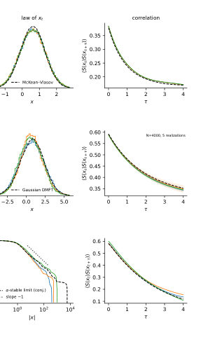
<figcaption class="paper-figure-caption"><b>Fig 1.</b> Figure 1. Trajectories and statistics of networks (1) in each of the three conjecture regimes. Colored curves: simulations with identical initial conditions and Brownian motions but dis- tinct coupling distributions. Top: weakly heterogeneous couplings Jij = −1/n + 2gij/√an with an = n3/2, gij centered with unit variance (Gaussian, Rademacher, centered log-normal). Middle: same laws with an = n (strongly heterogeneous regime). Bottom: heavy-tailed couplings Jij = gijn−1/α, α = 1, with gij symmetric Pareto, symmetric α-stable or Student, normalized to the same tail P(|g| &gt; x) ∼x−α. Left: trajectory of neuron 1; bottom left: neu- ron 1 and the two neurons whose trajectories differ most...</figcaption>
</figure>
<figure class="paper-figure-card">
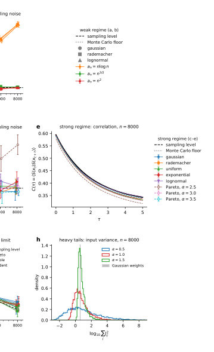
<figcaption class="paper-figure-caption"><b>Fig 2.</b> Figure 2. Tests of the conjecture in the three regimes: (a- b) Weakly heterogeneous regimes. (a) Wasserstein distance between the network and the McKean–Vlasov solution, an ∈ {n log n, n3/2, n2} and three laws of the couplings (markers); dashed: sampling level; dotted: Monte Carlo floor, estimating the fluctuation in the estimate of the limit. (b) Ratio of the dis- tance to the sampling level. (c-e) Strongly heterogeneous regime (an = n), for five light-tailed laws and symmetric Pareto couplings with α ∈{5/2, 3, 7/2} normalized to unit variance; (c) distance to the Gaussian self-consistent limit; (d) ratio to the sampling level; (e) correlation functions at n = 8 000 and in the limit. (f-g)...</figcaption>
</figure>
</div>

<p><strong>Summary.</strong> This paper rigorously investigates the universality of dynamics in large, randomly connected neural networks. It establishes that the system's long-term behavior depends critically on the statistical properties of the random couplings. By proving convergence to different limiting equations—including McKean–Vlasov, Gaussian, and $\alpha$-stable processes—the work deepens the understanding of collective dynamics in complex, disordered systems.</p>
<p><strong>Why it may be interesting.</strong> The study of complex, non-equilibrium dynamics in large, disordered systems, such as neural networks, shares mathematical techniques with spin-glass models and disordered quantum systems, making it relevant for understanding emergent collective behavior.</p>
<details>
<summary>Detailed structure</summary>
<p><strong>Main problem.</strong> The paper investigates the universality of collective dynamics in randomly connected neural networks, determining if the long-term behavior depends on the specific distribution of random coupling strengths.</p>
<p><strong>Main result.</strong> The authors prove convergence to different limiting equations—McKean–Vlasov, non-Markovian Gaussian, or $\alpha$-stable—depending on whether the couplings are weakly, strongly, or heavy-tailed.</p>
<p><strong>Method.</strong> The analysis relies on extending the Geman and Hwang conjecture by proving quenched convergence, using relative-entropy comparisons, and analyzing the propagation of chaos across different coupling regimes.</p>
<p><strong>Model / system.</strong> The system is a randomly connected neural network governed by a firing-rate equation involving intrinsic dynamics, random couplings ($J_{ij}$), and stochastic noise. The analysis covers three regimes: weakly heterogeneous (variance $o(1/n)$), strongly heterogeneous (variance $O(1/n)$), and heavy-tailed couplings.</p>
<p><strong>Key observables.</strong> The limiting dynamics are the key observables, including the McKean–Vlasov equation, self-consistent Gaussian processes, and $\alpha$-stable processes.</p>
<p><strong>Important parameters / regimes.</strong> The key parameters are the scaling of the coupling variance relative to $1/n$, and the tail index $\alpha$ for heavy-tailed couplings.</p>
<p><strong>Assumptions / limitations.</strong> Assumptions include the Lipschitz continuity of the intrinsic dynamics, moment conditions (e.g., fourth-moment assumption for weak heterogeneity), and the assumption of sub-Gaussian couplings for one proof.</p>
<p><strong>Figures summary.</strong> Figures are noted to show trajectories illustrating convergence in the weakly heterogeneous regime and quantitative comparisons of network simulations to predicted limits across different coupling scalings.</p>
<p><strong>Paper structure.</strong> The paper reviews the foundational conjecture, then presents new proofs and extensions for the three distinct coupling regimes (weakly, strongly, and heavy-tailed), concluding with proposals for new conjectures.</p>
</details>
<details>
<summary>Abstract</summary>
<p>Randomly connected networks are ubiquitous in computer science, physics or biology. A central question is whether, and how, their collective dynamics depend on the choice of the distribution of the random couplings. Forty years ago, Geman and Hwang formulated a precise version of this \emph{universality} question for randomly connected neural networks. We come back to these conjectures, review what was proven since, provide a few new extensions and propose new conjectures in this paper. For $n$ neuron networks with couplings with a mean scaling as $1/n$ and light enough tails, two classes of limits are expected. For \emph{weakly heterogeneous} couplings, with variance $o(1/n)$, the network is predicted to converge to a McKean--Vlasov equation, and a broad literature has established this under general assumptions. For \emph{strongly heterogeneous} couplings, with variance of order $1/n$, the limit is a non-Markovian equation driven by a self-consistent Gaussian process. After landmark results for Gaussian couplings, universality was only recently established for linear interactions, while the continuous-time nonlinear case relevant to neuroscience remained open. Here, in the weakly heterogeneous regime, we prove quenched convergence on every time interval under a fourth-moment assumption only, and convergence in probability under an assumption slightly stronger than a second moment. In the strongly heterogeneous regime, we prove convergence for nonlinear interactions in continuous time, averaged over sub-Gaussian couplings and on every time interval, by a relative-entropy comparison with Gaussian couplings. We then extend the conjecture to heavy-tailed couplings, and propose a limit driven by a self-consistent $α$-stable process, for which we prove existence for every $α\in(0,2)$ and uniqueness for $α\in[1,2)$, and provide extensive numerical evidence in all three cases.</p>
</details>
<p><sub><a href="#top">↑ back to top</a></sub></p>

<p><a id="paper-2610.39401"></a></p>
<h3 id="poschl-teller-type-of-jaynes-cummings-hamiltonians-susy-transformations"><a href="http://arxiv.org/abs/2610.39401v1">Pöschl-Teller type of Jaynes-Cummings Hamiltonians: SUSY transformations</a></h3>
<p><strong>Authors:</strong> İsmail Burak Ateş, Şengül Kuru, Javier Negro, Efe Serbest<br>
<strong>Type:</strong> theory · <strong>Category:</strong> other · <strong>PDF:</strong> <a href="https://arxiv.org/pdf/2610.39401v1">https://arxiv.org/pdf/2610.39401v1</a><br>
<strong>Analysis basis:</strong> full PDF text, analyzed in chunks
<strong>Topic relevance:</strong> <code>Tavis-Cummings &amp; cavity-many-emitter</code> <strong>3/5</strong> · <code>analog quantum simulation</code> <strong>1/5</strong></p>
<div class="figure-strip-hint">↔ Scroll figures horizontally</div>
<div class="paper-figures-scroll">
<figure class="paper-figure-card">
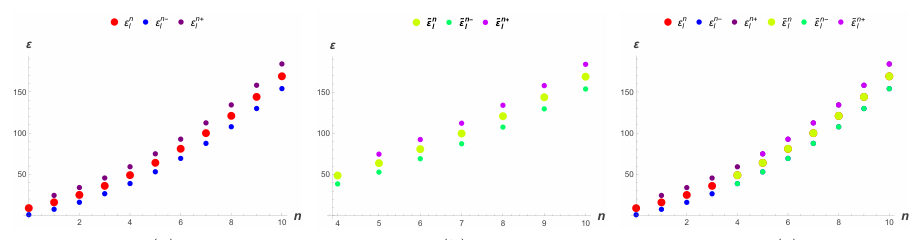
<figcaption class="paper-figure-caption"><b>Fig 1.</b> Figure 1: (a): Spectrum for scalar and matrix PT Hamiltonians (εn ℓand εn,± ℓ , respectively) for the initial Hamiltonian with (ℓ= 3, β = 1, δℓ= 8). (b): Spectrum for a k = 4 partner Hamiltonian ˜εn ℓand ˜εn,± ℓ . (c): For both spectra together. The spectra coincide except for the first four levels which are not present in the k = 4 partner Hamiltonian.</figcaption>
</figure>
<figure class="paper-figure-card">
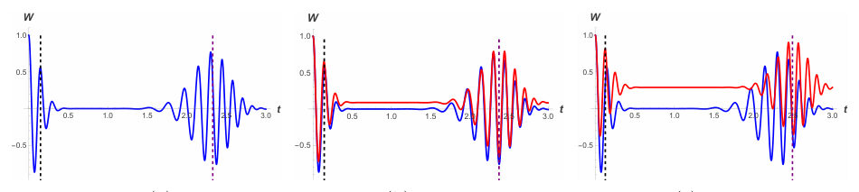
<figcaption class="paper-figure-caption"><b>Fig 2.</b> Figure 2: (a) Inversion probabilities for a coherent state in blue for ψP T (z) and z = 20, ℓ= 20, δ = 0, k = 0, β = 1. (b) Plot of the previous case together with another evolution under a k = 1 partner (in red). (c) The same elements: initial evolution in blue, with that of a k = 4 partner in red. Dashing lines of classical and revival time are also included.</figcaption>
</figure>
<figure class="paper-figure-card">
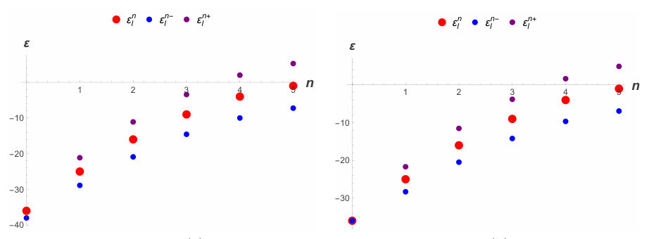
<figcaption class="paper-figure-caption"><b>Fig 3.</b> Figure 3: Spectrum for scalar εn ℓand matrix PT Hamiltonians εn,± ℓ for (ℓ= 6, β = 1, δℓ= 2) (a) and (ℓ= 6, β = 1, δℓ= 0), resonance (b). In resonance the initial energy level is the same for scalar and for matrix Hamiltonians, as it can be appreciated in the figure.</figcaption>
</figure>
<figure class="paper-figure-card">
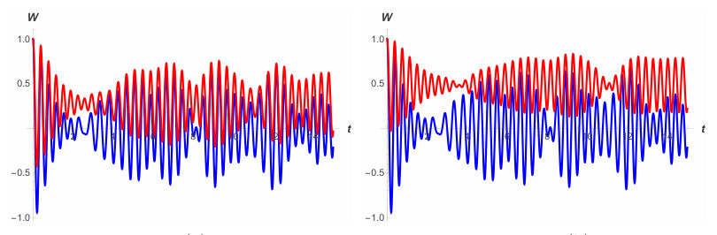
<figcaption class="paper-figure-caption"><b>Fig 4.</b> Figure 4: Evolution in time of the atomic inversion W of coherent states in decreasing hJC Hamiltonians corresponding to ξ = 1, ℓ= 8, β = 1, δ = 0 (blue) k = 0 and ξ = 1, ℓ= 8, β = 1, δ = 0 (Red, panel (a)) k = −1, ξ = 1, ℓ= 8, β = 1, δ = 0 (Red, panel (b)) k = −2.</figcaption>
</figure>
</div>

<p><strong>Summary.</strong> This paper generalizes the Jaynes-Cummings model by incorporating Pöschl-Teller potentials within the framework of Supersymmetric Quantum Mechanics. The authors establish a hierarchy of partner Hamiltonians and demonstrate that these generalized models retain key physical symmetries of the original JC model. This suggests that the JC interaction belongs to a wider, mathematically tractable class of interacting quantum systems.</p>
<p><strong>Why it may be interesting.</strong> This work provides a systematic, mathematically rigorous framework (SUSY) to generalize fundamental models in quantum optics (JC model) using exactly solvable potentials (PT), yielding insights into anharmonic dynamics and spectral symmetries.</p>
<details>
<summary>Detailed structure</summary>
<p><strong>Main problem.</strong> To define and investigate generalized Jaynes-Cummings (JC) Hamiltonians using supersymmetric (SUSY) quantum mechanics methods.</p>
<p><strong>Main result.</strong> The generalized JC Hamiltonians, built using Pöschl-Teller potentials, share key characteristics with the standard JC model, suggesting they belong to a broader class of solvable interacting systems.</p>
<p><strong>Method.</strong> The study employs SUSY quantum mechanics, utilizing shape-invariant hierarchies and intertwining relations to construct and analyze partner Hamiltonians.</p>
<p><strong>Model / system.</strong> The system models the interaction between an atom and a quantized field, generalized by replacing standard photon operators with those derived from trigonometric or hyperbolic Pöschl-Teller (PT) potentials.</p>
<p><strong>Key observables.</strong> Atomic inversion ($\langle\sigma_3
angle$), Rabi frequency ($\Omega$), classical and revival times ($T_{cl}, T_{rev}$), and energy eigenvalues ($\epsilon_{n,\pm}^\ell$).</p>
<p><strong>Important parameters / regimes.</strong> Detuning parameter ($\delta$), coupling coefficient ($eta$), and the order index ($\ell$).</p>
<p><strong>Assumptions / limitations.</strong> The analysis assumes the existence of a shape-invariant hierarchy $\{H_\ell\}$ factorizable by first-order operators, and the structure relies on specific ansatz forms for intertwining operators.</p>
<p><strong>Figures summary.</strong> Figures illustrate the time evolution of atomic inversion for coherent states under different partner Hamiltonians ($k=0, 1, 4$) and compare spectra for scalar and matrix Hamiltonians.</p>
<p><strong>Paper structure.</strong> The paper progresses by first defining the generalized JC Hamiltonian using SUSY methods, then establishing a hierarchy of partner Hamiltonians via intertwining relations, and finally analyzing the time evolution and spectral properties for both trigonometric and hyperbolic PT potentials.</p>
</details>
<details>
<summary>Abstract</summary>
<p>The aim of this work is to define and investigate the generalized Jaynes-Cummings (JC) Hamiltonian by means of supersymmetric (SUSY) quantum mechanics methods. We have considered trigonometric and hyperbolic Pöschl-Teller (PT) potentials as two natural ingredients to modify the standard JC model. We show that these generalized JC Hamiltonians have a list of characteristics in common with the JC Hamiltonian, for example: matrix intertwining, excitation number symmetry, Rabi frequency, formulas for atomic inversion and classical and revival times. Therefore, we conclude that JC Hamiltonians can be considered as one example of a wider a class of generalized Hamiltonians which can be useful in broader interaction problems.</p>
</details>
<p><sub><a href="#top">↑ back to top</a></sub></p>

<p><a id="paper-2610.39793"></a></p>
<h3 id="two-dimensional-binary-lennard-jones-mixtures-with-ecmc"><a href="http://arxiv.org/abs/2610.39793v1">Two-dimensional binary Lennard-Jones mixtures with ECMC</a></h3>
<p><strong>Authors:</strong> Kush Patel, Gabriele Tartero, Werner Krauth<br>
<strong>Type:</strong> theory · <strong>Category:</strong> statistical mechanics · <strong>PDF:</strong> <a href="https://arxiv.org/pdf/2610.39793v1">https://arxiv.org/pdf/2610.39793v1</a><br>
<strong>Analysis basis:</strong> full PDF text, analyzed in chunks
<strong>Topic relevance:</strong> <code>methods for driven-dissipative</code> <strong>3/5</strong> · <code>scars &amp; prethermalization</code> <strong>1/5</strong></p>
<div class="figure-strip-hint">↔ Scroll figures horizontally</div>
<div class="paper-figures-scroll">
<figure class="paper-figure-card">
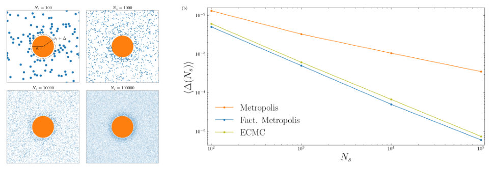
<figcaption class="paper-figure-caption"><b>Fig 1.</b> FIG. 1: Pope-in-the-crowd effect and depletion limit for the binary Lennard-Jones mixture with a single solute particle and Ns = 102, 103, 104, 105 solvent particles, at ρ∗ l = ρ∗ s = 0.09 (with T ∗ l = T ∗ s = 1, εsl = 1). (a): Equilibrium configurations of binary Lennard-Jones mixtures (b): Mean proposed displacement ⟨∆⟩of the solute particle yielding an acceptance probability of about 50% (±2%), as a function of Ns. For ECMC, ⟨∆⟩is the inverse event rate for the solute particle.</figcaption>
</figure>
<figure class="paper-figure-card">
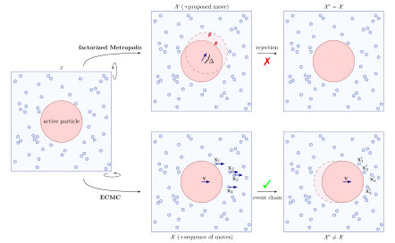
<figcaption class="paper-figure-caption"><b>Fig 2.</b> FIG. 2: Large-scale consequences of the pope-in-the-crowd effect in the factorized Metropolis algorithm and in ECMC. In the former, single solvent particles reject the move of the solute particle, but then do not move away. In contrast, after a rejection, ECMC moves away the particle causing it. In front of the solute particle, this liberates space that can be occupied by its next move.</figcaption>
</figure>
<figure class="paper-figure-card">
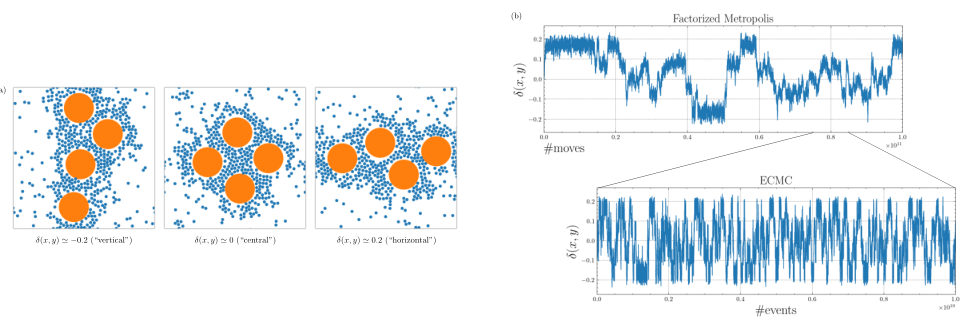
<figcaption class="paper-figure-caption"><b>Fig 3.</b> FIG. 3: Equilibrium benchmark. Horizontal–vertical switching of a Lennard-Jones system with Ns = 460 solvent particles in a square box (σl/σs = 10, ρ∗ l = 0.16, ρ∗ s = 0.184, T ∗ l = T ∗ s = 0.571, εsl = 1.75), under factorized-Metropolis and ECMC dynamics. (a): Typical “vertical” and “horizontal” equilibrium configurations, separated by the intermediate “central” one. (b): Time evolution of δ(x, y) (see Eq. (10)) for the factorized Metropolis algorithm and for ECMC. The speedup of ECMC, from the autocorrelation time of δ(x, y), is roughly 150.</figcaption>
</figure>
<figure class="paper-figure-card">
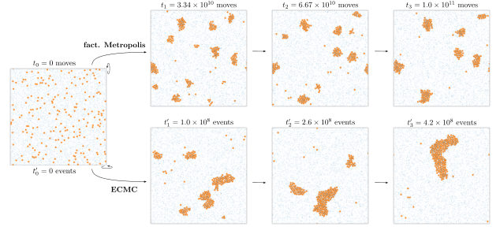
<figcaption class="paper-figure-caption"><b>Fig 4.</b> FIG. 4: Non-equilibrium benchmark. Lennard-Jones coarsening dynamics of the factorized Metropolis algorithm and of ECMC with Ns = 10000 and Nl = 200, (σs/σl = 10, ρ∗ l = 0.05, ρ∗ s = 0.025, T ∗ l = 0.46, T ∗ s = 0, 575, εsl = 1.087). Initially, solute and solvent are in independent homogeneous vapor states corresponding to εsl = 0. ECMC equilibrates after ∼4 × 108</figcaption>
</figure>
<figure class="paper-figure-card">
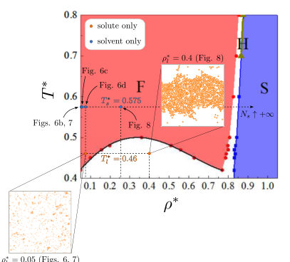
<figcaption class="paper-figure-caption"><b>Fig 5.</b> FIG. 5: Phase diagram of the two-dimensional monodisperse Lennard-Jones system with a cutoff (adapted from Ref. [29, Fig. 7]). At ρ∗= 0.05, T ∗= 0.46, the system is in the vapor phase, while at ρ∗= 0.4, T ∗= 0.46, it exhibits a vapor–liquid phase coexistence with, for N = 1000, a stripe-shaped interface. At T ∗= 0, 575, it remains above the critical point. The binary mixtures in Sec. IV are built from the monodisperse configurations indicated here.</figcaption>
</figure>
</div>

<p><strong>Summary.</strong> This work develops and compares advanced Monte Carlo algorithms, notably ECMC, for simulating 2D binary Lennard-Jones mixtures with long-range interactions. The research demonstrates that non-reversible sampling methods provide substantial computational speedups over traditional reversible methods. This advances our understanding of phase behavior and dynamics in systems governed by solvent-induced depletion forces.</p>
<p><strong>Why it may be interesting.</strong> The development and benchmarking of non-reversible sampling techniques like ECMC are highly relevant for simulating complex, slow dynamics in many-body systems, which is a core challenge in modern statistical mechanics simulations.</p>
<details>
<summary>Detailed structure</summary>
<p><strong>Main problem.</strong> The paper analyzes and compares local Monte Carlo algorithms for simulating the complex dynamics and phase behavior of two-dimensional binary Lennard-Jones mixtures, particularly focusing on long-range interactions.</p>
<p><strong>Main result.</strong> Non-reversible algorithms, specifically ECMC, demonstrate significant speedups (orders of magnitude) over reversible methods like Metropolis when simulating equilibrium and out-of-equilibrium dynamics.</p>
<p><strong>Method.</strong> The study employs advanced Monte Carlo techniques, including factorized Metropolis filters and the non-reversible Event-Chain Monte Carlo (ECMC) algorithm, adapted with a cell-veto strategy to handle long-range interactions.</p>
<p><strong>Model / system.</strong> The system is a two-dimensional binary Lennard-Jones mixture (solute and solvent particles) governed by a Lennard-Jones potential, allowing for the study of induced 'depletion interactions' from the solvent.</p>
<p><strong>Key observables.</strong> Equilibrium and out-of-equilibrium dynamics, switching rates between free-energy minima, mean step size, and the local orientation parameter ($\psi_6$) to distinguish solid/fluid phases.</p>
<p><strong>Important parameters / regimes.</strong> The depletion limit (where solvent density increases while solute parameters are fixed), temperature ($T$), and interaction strengths ($\epsilon_{sl}$).</p>
<p><strong>Assumptions / limitations.</strong> The primary assumption is that the use of non-reversible Markov chains (ECMC) provides a superior sampling efficiency compared to traditional reversible methods for these complex systems.</p>
<p><strong>Figures summary.</strong> Figures illustrate equilibrium configurations and mean proposed displacements in the depletion limit, and show the evolution of solute-solvent mixtures under varying interaction strengths, revealing phase transitions.</p>
<p><strong>Paper structure.</strong> The paper progresses by first introducing the physical model and the need for specialized algorithms. It then details the comparison between Metropolis, factorized Metropolis, and ECMC, benchmarking their performance in various thermodynamic limits, and finally analyzing structural properties using local order parameters.</p>
</details>
<details>
<summary>Abstract</summary>
<p>We discuss reversible and non-reversible local Monte Carlo algorithms for long-range two-dimensional binary Lennard-Jones mixtures. We illustrate how the factorized Metropolis filter efficiently handles long-range interactions even for binary mixtures, using an adapted cell-veto strategy. We then benchmark the non-reversible event-chain Monte Carlo (ECMC) algorithm against the factorized Metropolis algorithm. For simple test cases, we demonstrate speedups of several orders of magnitude in the equilibrium and the out-of-equilibrium dynamics. Using the ECMC algorithm, we provide an overview of the physics of binary Lennard-Jones mixtures, from the case without depletion (no interaction between solute and solvent) all the way to the depletion limit (with a diverging number of solvent particles). We analyze the algorithms in different thermodynamic phases and in the corresponding limits.</p>
</details>
<p><sub><a href="#top">↑ back to top</a></sub></p>

<p><a id="paper-2610.40469"></a></p>
<h3 id="chiral-math474math-wave-superconductivity-proximate-to-a-fractional-chern-insulator-and-a-topological-charge-density-wave-in-a-moire-chern-band"><a href="http://arxiv.org/abs/2610.40469v1">Chiral $p$-Wave Superconductivity Proximate to a Fractional Chern Insulator and a Topological Charge Density Wave in a Moiré Chern Band</a></h3>
<p><strong>Authors:</strong> Yunze Ouyang, Fengcheng Wu<br>
<strong>Type:</strong> theory · <strong>Category:</strong> strongly correlated electrons · <strong>PDF:</strong> <a href="https://arxiv.org/pdf/2610.40469v1">https://arxiv.org/pdf/2610.40469v1</a><br>
<strong>Analysis basis:</strong> full PDF text, analyzed in chunks
<strong>Topic relevance:</strong> <code>analog quantum simulation</code> <strong>3/5</strong></p>
<div class="figure-strip-hint">↔ Scroll figures horizontally</div>
<div class="paper-figures-scroll">
<figure class="paper-figure-card">
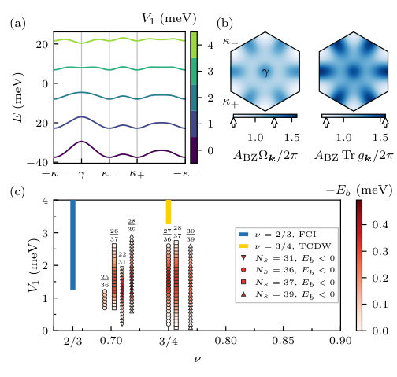
<figcaption class="paper-figure-caption"><b>Fig 1.</b> FIG. 1. (a) Hartree–Fock band at filling ν = 1 along high- symmetry lines of the moir´e BZ for V1 = 0, 1, 2, 3, and 4 meV. (b) Ωk (left) and Tr gk (right) in units of 2π/ABZ, with ABZ the BZ area. Arrows mark the data range of each map. (c) ED phase diagram as functions of ν and V1. Markers, colored by −Eb, indicate pair binding for Ns = 31 (down triangles), 36 (circles), 37 (squares), and 39 (up triangles); fractions indicate N/Ns. Blue and yellow bars mark the FCI and TCDW, respectively, for Ns = 36.</figcaption>
</figure>
<figure class="paper-figure-card">
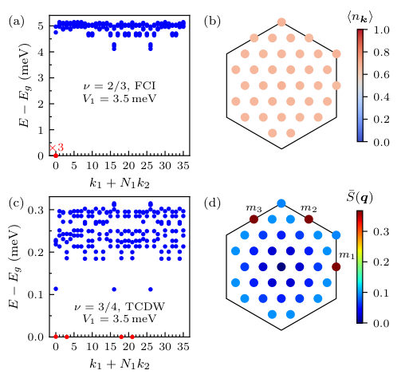
<figcaption class="paper-figure-caption"><b>Fig 2.</b> FIG. 2. (a) ED spectrum of the FCI at ν = 2/3 relative to the ground-state energy Eg, with the three quasidegenerate ground states (×3) in red. (b) ⟨nk⟩averaged over the FCI ground states. (c) The TCDW spectrum at ν = 3/4, with four quasidegenerate ground states. (d) Band-projected structure factor ¯S(q) averaged over the TCDW ground states. All pan- els are for Ns = 36 and V1 = 3.5 meV.</figcaption>
</figure>
<figure class="paper-figure-card">
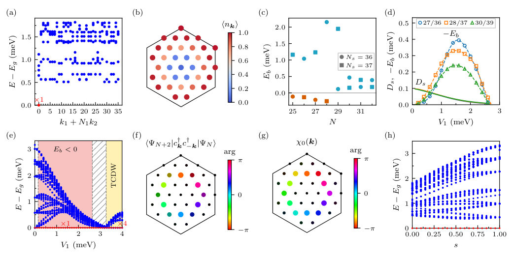
<figcaption class="paper-figure-caption"><b>Fig 3.</b> FIG. 3. (a) ED spectrum, with the nondegenerate ground state (×1) in red. (b) ⟨nk⟩of the ground state in (a). (c) Eb(N) for Ns = 36 (circles) and 37 (squares). Vermilion marks Eb &lt; 0 and cyan Eb &gt; 0. (d) Ds (solid lines) and −Eb (dashed lines, open markers) as functions of V1 where Eb &lt; 0, for N/Ns = 27/36 (circles), 28/37 (squares), and 30/39 (triangles). (e) Energy levels as functions of V1, with the ground state in red. Pink, hatched, and yellow shaded regions denote the pair-binding, transition, and TCDW regimes, respectively; ×n indicates an n-fold ground-state degeneracy. (f) F(k) in the BZ. (g) χ0(k) for the ground state in (a). In (f) and (g), the hue represents the phase, while the...</figcaption>
</figure>
<figure class="paper-figure-card">
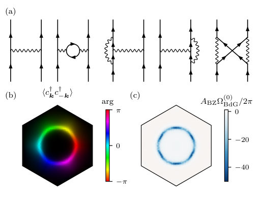
<figcaption class="paper-figure-caption"><b>Fig 4.</b> FIG. 4. (a) Feynman diagrams of the KL pairing interaction to second order in the bare interaction (wavy lines), includ- ing the first-order term and the four second-order terms. (b) ⟨c† kc† −k⟩in the BZ. Hue represents the phase and brightness</figcaption>
</figure>
</div>

<p><strong>Summary.</strong> This work theoretically examines how superconductivity emerges in a moiré Chern band system, showing it exists near both a Fractional Chern Insulator and a Topological Charge Density Wave. Using ED and KL theory, the authors confirm chiral p-wave pairing and characterize the resulting superconducting state as topologically non-trivial ($C_{\text{BdG}}=-1$). This highlights the rich competition between different correlated electronic orders.</p>
<p><strong>Why it may be interesting.</strong> The interplay between topological order (FCI/Chern bands) and unconventional superconductivity is a major frontier in condensed matter physics, highly relevant to understanding emergent quantum phenomena in moiré heterostructures.</p>
<details>
<summary>Detailed structure</summary>
<p><strong>Main problem.</strong> The study investigates the complex interplay between superconductivity, fractional topological states (FCI), and charge order (TCDW) in a moiré Chern band system.</p>
<p><strong>Main result.</strong> The system exhibits chiral p-wave superconductivity proximate to an FCI at $\nu=2/3$ and a TCDW at $\nu=3/4$, characterized by a topological superconducting state with $C_{\text{BdG}}=-1$.</p>
<p><strong>Method.</strong> The research employs Exact Diagonalization (ED) on finite clusters and utilizes Kohn-Luttinger theory to analyze pairing instabilities.</p>
<p><strong>Model / system.</strong> The physical system is a spin-polarized moiré Chern band derived from twisted $\text{MoTe}_2$, modeled with a continuum Hamiltonian and subjected to short-range repulsive interactions.</p>
<p><strong>Key observables.</strong> Pair binding energy ($E_b$), superfluid stiffness, Bogoliubov-de Gennes Chern number ($C_{\text{BdG}}$), and pairing correlation functions.</p>
<p><strong>Important parameters / regimes.</strong> Filling factors $\nu=2/3$ (FCI) and $\nu=3/4$ (TCDW); interaction strength $V_1$.</p>
<p><strong>Assumptions / limitations.</strong> The analysis assumes the system can be projected onto the lowest-energy band and relies on mean-field approximations (like KL theory) for certain analyses.</p>
<p><strong>Figures summary.</strong> Figures illustrate pair binding across system sizes, the evolution of the ED spectrum, momentum distribution, and superfluid stiffness across different pairing regimes.</p>
<p><strong>Paper structure.</strong> The paper analyzes the system by first establishing the model Hamiltonian, then using ED to find pair-binding signatures, and finally applying KL theory and topological invariants to characterize the resulting superconducting and ordered phases.</p>
</details>
<details>
<summary>Abstract</summary>
<p>We study a spin-polarized moiré Chern band of twisted MoTe$_2$ with short-range repulsion, finding superconductivity proximate to a fractional Chern insulator at filling $ν=2/3$ and a topological charge density wave at $ν=3/4$. Exact diagonalization reveals pair binding over $0.7\lesssimν\lesssim0.77$, consistent with experiment, along with finite superfluid stiffness, chiral $p$-wave pairing correlations, and adiabatic connectivity to an attractive model. At weak repulsion, Kohn-Luttinger theory supports a Fermi-surface instability with the same pairing symmetry. The superconducting state has a Bogoliubov-de Gennes Chern number $C_{\mathrm{BdG}}=-1$, opposite to the normal-state Chern number at $ν=1$. Our results reveal interplay among superconductivity, fractional topology, and charge order.</p>
</details>
<p><sub><a href="#top">↑ back to top</a></sub></p>

<p><a id="paper-2610.39360"></a></p>
<h3 id="composable-device-independent-quantum-digital-signatures"><a href="http://arxiv.org/abs/2610.39360v1">Composable Device-Independent Quantum Digital Signatures</a></h3>
<p><strong>Authors:</strong> Jing-Wei Bian, Bing-Hong Li, Xu-Yang Lu, Shi-Gen Li, Hua-Lei Yin, Zeng-Bing Chen<br>
<strong>Type:</strong> theory · <strong>Category:</strong> quantum information and computing · <strong>PDF:</strong> <a href="https://arxiv.org/pdf/2610.39360v1">https://arxiv.org/pdf/2610.39360v1</a><br>
<strong>Analysis basis:</strong> full PDF text, analyzed in chunks
<strong>Topic relevance:</strong> <code>quantum measurements</code> <strong>3/5</strong></p>
<div class="figure-strip-hint">↔ Scroll figures horizontally</div>
<div class="paper-figures-scroll">
<figure class="paper-figure-card">
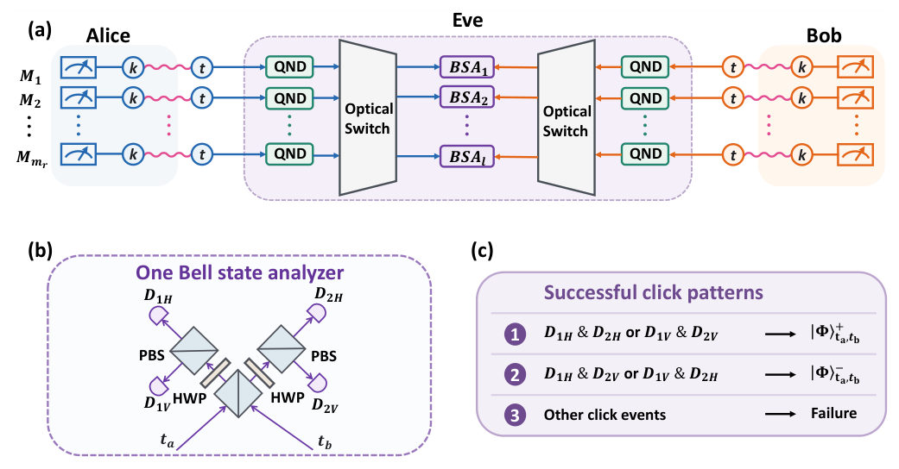
<figcaption class="paper-figure-caption"><b>Fig 1.</b> FIG. 1. Schematic of the distribution stage of the proposed QDS protocol. (a) Alice and Bob each generate mr entangled photon pairs. For each pair, the local k photon is measured immediately, while the corresponding t photon is transmitted to the intermediate node Eve through an optical channel. At Eve’s node, quantum nondemolition (QND) measurements identify the successfully arrived photons. Based on the QND outcomes, SWs adaptively pair the arrived photons from Alice and Bob and route each formed photon pair to a separate BSA, where the Bell measurements are performed in parallel. (b) Optical implementation of one BSA, consisting of polarizing beam splitters (PBSs), half-wave plates...</figcaption>
</figure>
<figure class="paper-figure-card">
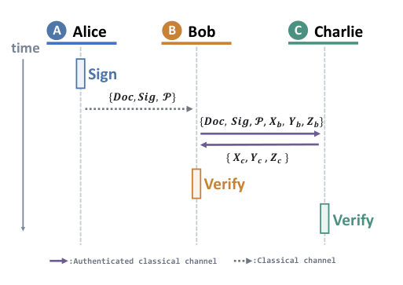
<figcaption class="paper-figure-caption"><b>Fig 2.</b> FIG. 2. Schematic of the messaging stage of the proposed QDS protocol following successful slot preparation. The pro- cess involves three stages: the signing of Alice, the verifica- tion of Bob, and the verificationof Charlie. Information is ex- changed among three parties via classical and authenticated classical communication channels.</figcaption>
</figure>
<figure class="paper-figure-card">
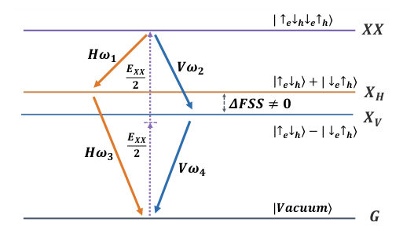
<figcaption class="paper-figure-caption"><b>Fig 3.</b> FIG. 3. The cascade energy level structure diagram of neu- tral biexcitons generating entangled photon pairs in QDs. |↑⟩ and |↓⟩represent the spin-up and spin-down states, and the subscripts e and h indicate these states of electrons or holes. H and V represent horizontal polarization and vertical po- larization of photons. ∆FSS represents the energy difference between the two eigenstates of the neutral exciton. ω1, ω2, ω3 and ω4 denote the angular frequencies of the correspond- ing emitted photons. EXX represents the eigenenergy of the biexciton state.</figcaption>
</figure>
<figure class="paper-figure-card">
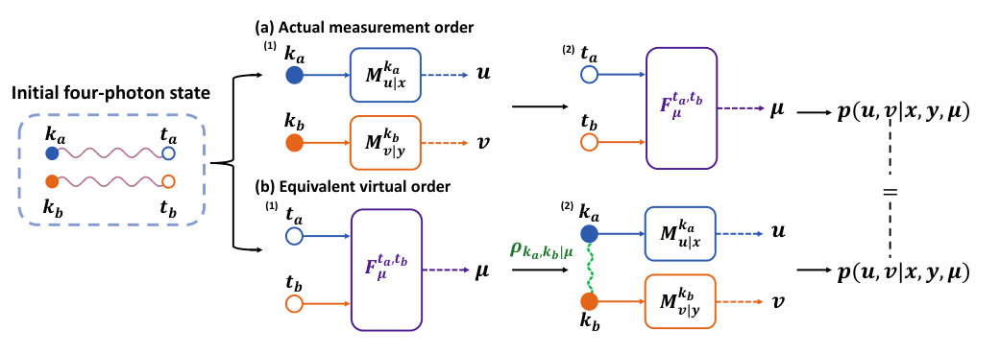
<figcaption class="paper-figure-caption"><b>Fig 4.</b> FIG. 4. Actual and equivalent virtual descriptions of the retained entanglement swapping event. (a) Alice and Bob first measure the local photons ka and kb, followed by Eve’s Bell measurement F ta,tb µ on ta and tb. (b) Equivalently, the Bell measurement can be considered first, preparing ρka,kb|µ before the local measurements. The two orders give the same conditional outcome statistics because the corresponding measurements act on different subsystems.</figcaption>
</figure>
<figure class="paper-figure-card">
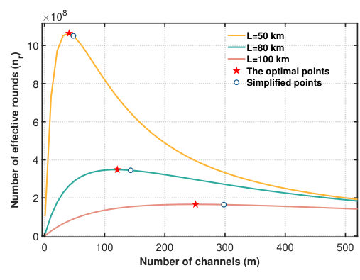
<figcaption class="paper-figure-caption"><b>Fig 5.</b> FIG. 5. Demonstration of number of effective rounds ver- sus number of channels under different fiber transmission dis- tances L = 50 km, 80 km, and 100 km. We set the number of entangled photon pairs generated by each party to N = 1011. The red stars represent the optimal points and the blue circles represent the simplified points we take.</figcaption>
</figure>
</div>

<p><strong>Summary.</strong> This paper develops a novel, composably secure framework for Quantum Digital Signatures (QDS) that operates in a device-independent manner. It achieves this by proposing a DI-QDS protocol utilizing one-time universal hashing and multi-channel multiplexing. The work is significant for establishing QDS as a robust, composable primitive for future quantum networks.</p>
<p><strong>Why it may be interesting.</strong> The focus on composable security and extending DI quantum cryptography to support full information security objectives is highly relevant to the theoretical understanding of quantum network protocols.</p>
<details>
<summary>Detailed structure</summary>
<p><strong>Main problem.</strong> The paper addresses the need to extend device-independent (DI) quantum cryptography to composably support all fundamental information security objectives, specifically requiring composable quantum digital signatures (QDSs).</p>
<p><strong>Main result.</strong> The authors establish the first composable security framework for QDS and realize an ideal DI-QDS resource using one-time universal hashing and multi-channel multiplexing.</p>
<p><strong>Method.</strong> The methodology involves establishing a composable security framework, developing a DI-QDS protocol, and deriving a related-key security bound for the underlying Toeplitz authentication.</p>
<p><strong>Model / system.</strong> The protocol utilizes an all-photon DI-Key Generation Protocol (DI-KGP) involving three parties (Alice, Bob, Charlie) and relies on entanglement distribution via QND measurements at an intermediate node (Eve).</p>
<p><strong>Key observables.</strong> Successful Bell measurement clicks, CHSH inequality violation ($\sum \chi(U_j = 0) \le n_r \gamma (1 - \omega_{thr})$), and the final signature $ ext{Sig}$.</p>
<p><strong>Important parameters / regimes.</strong> The protocol is demonstrated to work in the finite-size regime over lossy quantum channels, enabling signing over metropolitan-scale distances.</p>
<p><strong>Assumptions / limitations.</strong> The security analysis requires avoiding memory loopholes by setting up independent sublaboratories/devices for each party.</p>
<p><strong>Figures summary.</strong> Figure 1 schematically illustrates the distribution stage involving Alice, Bob, Eve, PBSs, HWPs, and BSA measurements for entanglement distribution.</p>
<p><strong>Paper structure.</strong> The paper details the DI-KGP distribution stage, followed by the QDS messaging stage which uses an OTUH-QDS scheme based on LFSR-based Toeplitz matrices for signing and verification.</p>
</details>
<details>
<summary>Abstract</summary>
<p>Extending device-independent (DI) quantum cryptography to composably support all fundamental information security objectives is crucial for secure quantum networks. Achieving this goal requires composable quantum digital signatures (QDSs), which support integrity, authenticity, and nonrepudiation when integrated into quantum networks. Yet existing QDS protocols generally rely on assumptions about the underlying quantum devices, while their security analyses remain largely restricted to stand-alone settings, leaving related-key attacks on the underlying linear feedback shift register (LFSR)-based Toeplitz authentication unaddressed. Here, we establish the first composable security framework for QDS within constructive cryptography, and realize the corresponding ideal QDS resource by developing a DI-QDS protocol employing one-time universal hashing and multi-channel multiplexing. We further derive a related-key security bound for the underlying LFSR-based Toeplitz authentication, thereby establishing unforgeability while extending the forgery boundary considered in previous QDS security analyses. We also demonstrate the practical feasibility of our DI-QDS protocol under realistic quantum network conditions in the finite-size regime, with numerical simulations showing that it enables efficient signing of multibit documents over metropolitan-scale distances. Our results establish QDS as a composable cryptographic primitive and extend DI quantum cryptography to support the full range of information security objectives with composable security guarantees in future quantum networks.</p>
</details>
<p><sub><a href="#top">↑ back to top</a></sub></p>

<p><a id="paper-2610.39847"></a></p>
<h3 id="digital-analog-quantum-neural-network-with-long-range-interactions"><a href="http://arxiv.org/abs/2610.39847v1">Digital-Analog Quantum Neural Network with Long-Range Interactions</a></h3>
<p><strong>Authors:</strong> Zongyuan Ge, Daili Li, Zewen Zhang<br>
<strong>Type:</strong> theory · <strong>Category:</strong> quantum information and computing · <strong>PDF:</strong> <a href="https://arxiv.org/pdf/2610.39847v1">https://arxiv.org/pdf/2610.39847v1</a><br>
<strong>Analysis basis:</strong> full PDF text, analyzed in chunks
<strong>Topic relevance:</strong> <code>analog quantum simulation</code> <strong>3/5</strong></p>
<div class="figure-strip-hint">↔ Scroll figures horizontally</div>
<div class="paper-figures-scroll">
<figure class="paper-figure-card">
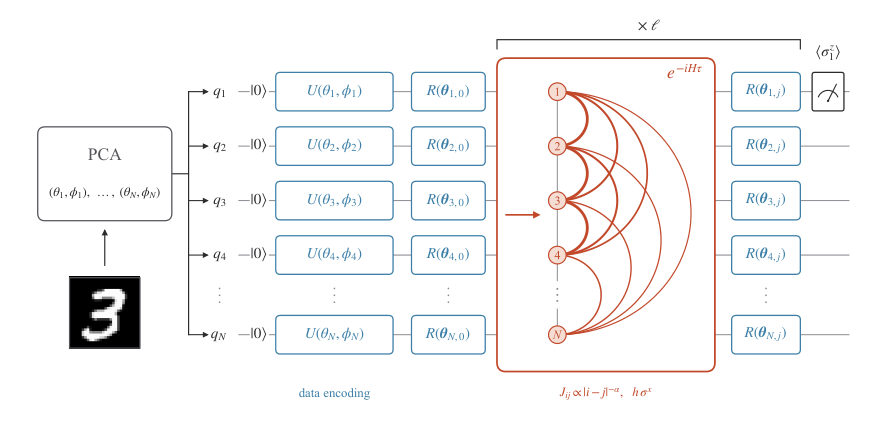
<figcaption class="paper-figure-caption"><b>Fig 1.</b> Figure 1. DA-QNN pipeline. An MNIST image is decomposed via PCA into 2N components {(θq, ϕq)} and encoded on qubits through Bloch-sphere rotations U(θq, ϕq). The encoded state is then processed by alternating digital and analog operations. Blue boxes denote the encoding rotations U(θq, ϕq) and the digital single-qubit rotations R(θq,j) of Eq. (2); the red box denotes an analog evolution under the LR-TFIM parameterized by time τ, in which the arcs indicate the power-law couplings and the horizontal arrow indicates the transverse field h. One of the qubits is measured at the end for classification.</figcaption>
</figure>
<figure class="paper-figure-card">
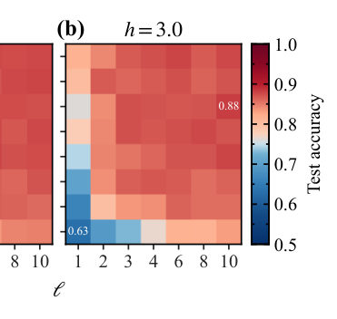
<figcaption class="paper-figure-caption"><b>Fig 2.</b> Figure 2. Binary classification accuracy of the digit pair 3v8 across (τ, ℓ) values for (a) h=1.0 and (b) h=3.0 at N =8 and α=1.0. Results are averaged over random seeds. The best and worst cells of each panel are annotated.</figcaption>
</figure>
<figure class="paper-figure-card">
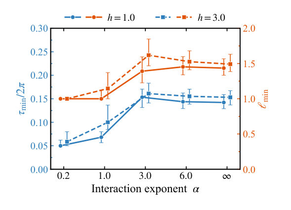
<figcaption class="paper-figure-caption"><b>Fig 3.</b> Figure 3. Minimum resources to reach acc⋆=0.70 versus α on the pair 3v8 with N =8. Blue: the shortest layerwise evolution time τmin. Orange: the lowest depth ℓmin. Solid circles: h=1.0, dashed squares: h=3.0. Error bars are 95% bootstrap confidence intervals over random seeds. Markers have been shifted slightly along the horizontal axis for better visibility.</figcaption>
</figure>
<figure class="paper-figure-card">
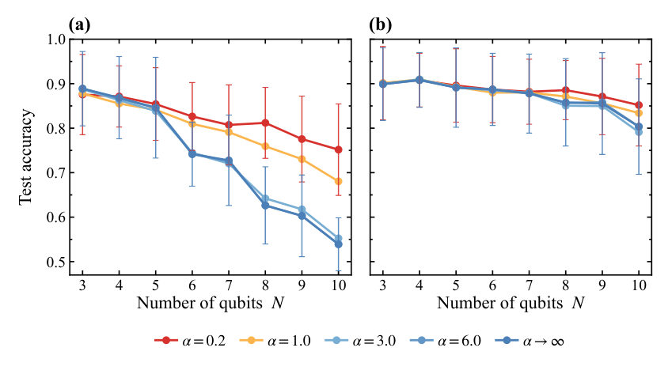
<figcaption class="paper-figure-caption"><b>Fig 4.</b> Figure 4. Binary classification accuracy with various system sizes N at h=1.0 for (a) ℓ=1 and (b) ℓ=2, averaged over six digit pairs. The curves for α=6.0 and α→∞nearly coincide. Error bars are one standard deviation across the six pairs and random seeds and shown only for α=0.2 and α→∞for clarity.</figcaption>
</figure>
<figure class="paper-figure-card">
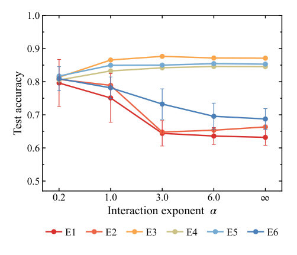
<figcaption class="paper-figure-caption"><b>Fig 5.</b> Figure 5. Effect of the encoding strategy on binary classification accuracy across α for the pair 3v8 at N =8, h=1.0, and ℓ=1. Each strategy encodes PCA components in order of importance and assigns a readout qubit: E1 [starting from the central qubit q5 and outward (q5 →q6 →q4 . . . q1) with readout qubit q1, the scheme used throughout this work], E2 [starting from q5 and outward (q5 →q4 →q6 . . . q1), q1], E3 [sequential (q1 →q8), q1], E4 [(q5 →q6 →q4 . . . q1), q5], E5 [(q5 →q4 →q6 . . . q1), q5], E6 [sequential, q5]. Error bars are 95% confidence intervals of the mean over random seeds and shown only for E1 and E6 for clarity.</figcaption>
</figure>
</div>

<p><strong>Summary.</strong> This paper investigates Digital-Analog Quantum Neural Networks (DA-QNNs) by analyzing the impact of long-range interactions within the underlying Ising model. The authors demonstrate that incorporating long-range couplings significantly boosts the efficiency of these hybrid quantum algorithms for tasks like image classification. This suggests that designing quantum hardware with tunable, long-range connectivity is a key resource for advancing practical, large-scale quantum computation.</p>
<p><strong>Why it may be interesting.</strong> The work directly addresses resource scaling in hybrid quantum algorithms, showing how engineered long-range connectivity can mimic the efficiency gains of deeper circuits or longer evolution times, which is crucial for hardware implementation.</p>
<details>
<summary>Detailed structure</summary>
<p><strong>Main problem.</strong> Developing efficient quantum neural network (QNN) protocols by combining single-qubit digital operations with analog quantum evolutions (DA-QNN).</p>
<p><strong>Main result.</strong> Incorporating long-range interactions significantly enhances the efficiency of DA-QNNs, requiring fewer computational resources (layers or time) for tasks like image classification.</p>
<p><strong>Method.</strong> The authors train the DA-QNN by minimizing binary cross-entropy loss using AdaGrad, obtaining gradients via reverse-mode automatic differentiation.</p>
<p><strong>Model / system.</strong> The core model is the Digital-Analog Quantum Neural Network (DA-QNN), which uses an analog block governed by the Long-Range Transverse-Field Ising Model (LR-TFIM) Hamiltonian.</p>
<p><strong>Key observables.</strong> Test accuracy (for classification), minimum required circuit depth ($\ell_{\min}$), and minimum evolution time ($    au_{\min}$).</p>
<p><strong>Important parameters / regimes.</strong> Interaction range exponent ($\alpha$), transverse field ($h$), circuit depth ($\ell$), and evolution time ($    au$).</p>
<p><strong>Assumptions / limitations.</strong> The primary focus is on quantifying the advantage conferred by tuning the interaction range $\alpha$ across a wide spectrum.</p>
<p><strong>Figures summary.</strong> Figures illustrate the DA-QNN pipeline, comparing resource requirements ($ au_{\min}$ vs $\alpha$) for classification, and showing how long-range interactions reduce resource needs compared to short-range ones.</p>
<p><strong>Paper structure.</strong> The paper systematically analyzes the DA-QNN framework, first demonstrating resource reduction using long-range interactions for supervised tasks, then exploring complementary signatures for unsupervised phase detection, and finally confirming the general advantage of long-range couplings.</p>
</details>
<details>
<summary>Abstract</summary>
<p>Protocols combining single-qubit digital operations with analog quantum evolutions bypass large numbers of two-qubit entangling gates, offering a promising approach to variational algorithms and hybrid quantum simulation. Focusing on the digital-analog quantum neural network (DA-QNN) as a representative framework, this work demonstrates that incorporating long-range interactions enhances the efficiency of such hybrid algorithms. Within the analog blocks, an Ising model with power-law interactions is employed to generate entanglement, and this protocol is benchmarked across supervised and unsupervised learning tasks. Beyond discussing the effects of the transverse field and evolution time, the primary analysis focuses on how the interaction range governs the expressibility and trainability of the ansatz. For supervised image classification and many-body phase detection, long-range ansatzes match the performance of their short-range counterparts with fewer DA-QNN layers or shorter evolution times, owing to the rapid information propagation across the system enabled by nonlocal couplings. This resource reduction alleviates the classical optimization overhead and eases experimental implementation. In unsupervised phase detection, although the long-range ansatz does not outperform its short-range counterpart in every regime, the two ansatzes provide complementary signatures that jointly reconstruct the complete phase diagram. These findings establish long-range interacting platforms as a compelling resource for advancing practical, large-scale digital-analog quantum computing.</p>
</details>
<p><sub><a href="#top">↑ back to top</a></sub></p>

<p><a id="paper-2610.39912"></a></p>
<h3 id="distributed-inner-product-estimation-of-continuous-variable-quantum-states"><a href="http://arxiv.org/abs/2610.39912v1">Distributed Inner Product Estimation of Continuous-Variable Quantum States</a></h3>
<p><strong>Authors:</strong> Kun Wang<br>
<strong>Type:</strong> theory · <strong>Category:</strong> quantum information and computing · <strong>PDF:</strong> <a href="https://arxiv.org/pdf/2610.39912v1">https://arxiv.org/pdf/2610.39912v1</a><br>
<strong>Analysis basis:</strong> full PDF text, analyzed in chunks
<strong>Topic relevance:</strong> <code>quantum measurements</code> <strong>3/5</strong></p>
<div class="figure-strip-hint">↔ Scroll figures horizontally</div>
<div class="paper-figures-scroll">
<figure class="paper-figure-card">
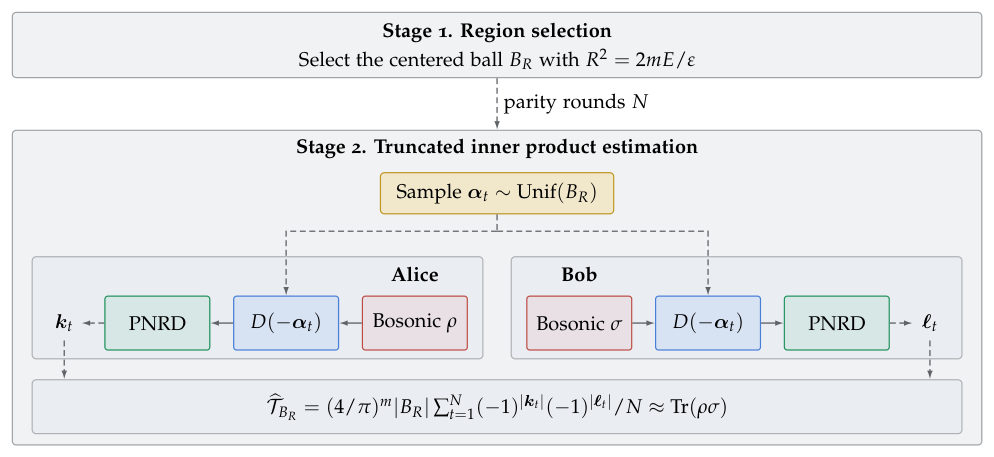
<figcaption class="paper-figure-caption"><b>Fig 1.</b> FIG. 1: CV-DIPE via coordinated displaced parity. Stage 1 selects the ball BR from the energy bound, with R2 = 2mE/ε. Its volume |BR| determines the sufficient number N of parity rounds at statistical tolerance ε/2 and failure probability δ. In Stage 2, Alice and Bob sample common points uniformly from BR, apply the corresponding displacements to fresh copies of their states, and measure Fock occupations with detectors that resolve photon number (PNRDs). The rescaled average product of their total parities yields bTBR, which estimates Tr(ρσ) with controlled truncation bias and statistical error.</figcaption>
</figure>
</div>

<p><strong>Summary.</strong> This paper presents theoretical protocols for estimating the inner product of unknown continuous-variable quantum states distributed between two parties. It compares three measurement schemes—displaced parity, Haar measurements, and homodyne shadows—to provide worst-case sample complexity guarantees. The results are crucial for developing certified benchmarking techniques for quantum optical systems.</p>
<p><strong>Why it may be interesting.</strong> This work is highly relevant to quantum optics and quantum information theory, providing rigorous, resource-aware protocols for benchmarking quantum processes (like state comparison) in realistic, distributed quantum hardware settings.</p>
<details>
<summary>Detailed structure</summary>
<p><strong>Main problem.</strong> The paper addresses Continuous-Variable Distributed Inner Product Estimation (CV-DIPE): estimating the inner product $    ext{Tr}(
ho\sigma)$ of two unknown quantum states $
ho$ and $\sigma$ prepared by distant, independent bosonic systems using only local measurements.</p>
<p><strong>Main result.</strong> The authors develop and analyze three distinct protocols (Coordinated Displaced Parity, Coordinated Haar Measurements, and Independent Homodyne Shadows) that provide certified, worst-case sample complexity guarantees for estimating the inner product from local data.</p>
<p><strong>Method.</strong> The estimation relies on relating the inner product to the Wigner function integral, which is then approximated by truncating the integral to a finite region $\Omega$ and using local measurements (like parity or homodyne measurements) to estimate the integral's value.</p>
<p><strong>Model / system.</strong> The system involves continuous-variable (CV) bosonic quantum states, which can be entangled or non-Gaussian, and are constrained by an energy bound $E$. The protocols are designed for distributed settings where local measurements are the only resource.</p>
<p><strong>Key observables.</strong> The primary observable is the inner product $  ext{Tr}(
ho\sigma)$. Diagnostics include the Wigner function $W_
ho(\alpha)$ and local measurement outcomes from parity or homodyne measurements.</p>
<p><strong>Important parameters / regimes.</strong> Key parameters include the target error $\epsilon$, the failure probability $\delta$, the energy constraint $E$, and the truncation radius $R$ or photon cutoff $L$.</p>
<p><strong>Assumptions / limitations.</strong> The analysis assumes the states belong to an energy-constrained class $\mathcal{C}_m^E$, which allows for the necessary finite truncation of the phase space integral to bound the bias.</p>
<p><strong>Figures summary.</strong> Figure 1 illustrates the CV-DIPE measurement scheme using displaced parity, involving selecting a measurement ball $\mathcal{B}_R$ and sampling points $\alpha_t$ to measure total parities $X_t, Y_t$. Table I compares the worst-case sample complexity scaling for the three protocols.</p>
<p><strong>Paper structure.</strong> The paper systematically develops and compares three protocols: 1) Coordinated Displaced Parity (using local parity measurements), 2) Coordinated Haar Measurements (projecting to finite dimensions), and 3) Independent Homodyne Shadows (using quadrature measurements). Each section derives sample complexity bounds for estimating $ ext{Tr}(
ho\sigma)$.</p>
</details>
<details>
<summary>Abstract</summary>
<p>Continuous-variable distributed inner product estimation (CV-DIPE) compares unknown states prepared by distant bosonic and quantum optical systems. It supports benchmarking without efficient classical descriptions or joint measurements. We develop three CV-DIPE protocols for the natural class of energy-constrained continuous-variable quantum states, based on coordinated displaced parity, coordinated Haar measurements, and independent homodyne shadows. For arbitrary multimode inputs in this class, including entangled and non-Gaussian states, we establish truncation error bounds and worst-case sample complexity guarantees for the exact inner product. The leading terms of these bounds favor coordinated Haar measurements, whose global implementation is experimentally challenging. The three protocols provide certified inner product estimates for distributed continuous-variable systems from local measurement data.</p>
</details>
<p><sub><a href="#top">↑ back to top</a></sub></p>

<p><a id="paper-2610.39978"></a></p>
<h3 id="electronic-liquid-crystals-and-superconductivity-from-doping-a-moire-mott-insulator"><a href="http://arxiv.org/abs/2610.39978v1">Electronic liquid crystals and superconductivity from doping a moiré Mott insulator</a></h3>
<p><strong>Authors:</strong> Yichi Zhang, Yiyu Xia, Zhongdong Han, Jekwan Lee, Brandon Bauer, Kenji Watanabe, Takashi Taniguchi, Wenjin Zhao, Kin Fai Mak, Jie Shan<br>
<strong>Type:</strong> experiment · <strong>Category:</strong> strongly correlated electrons · <strong>PDF:</strong> <a href="https://arxiv.org/pdf/2610.39978v1">https://arxiv.org/pdf/2610.39978v1</a><br>
<strong>Analysis basis:</strong> full PDF text, analyzed in chunks
<strong>Topic relevance:</strong> <code>analog quantum simulation</code> <strong>3/5</strong></p>
<div class="figure-strip-hint">↔ Scroll figures horizontally</div>
<div class="paper-figures-scroll">
<figure class="paper-figure-card">
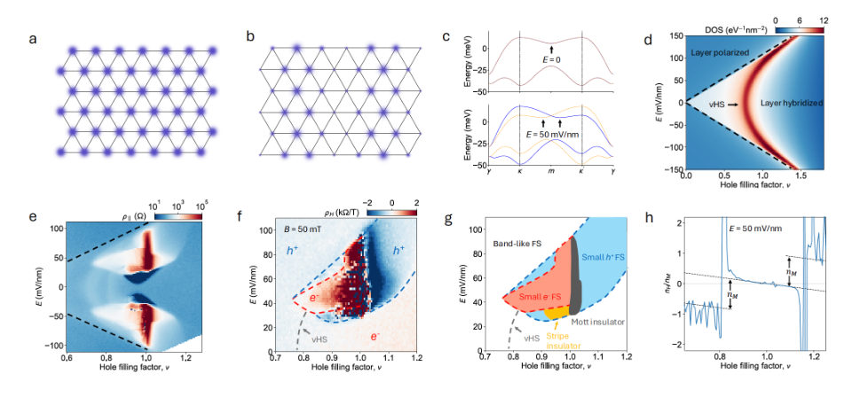
<figcaption class="paper-figure-caption"><b>Fig 1.</b> Figure 1 | Fermi surfaces of a doped moiré Mott insulator. a, Schematic moiré Mott insulator with one hole per moiré unit cell (i.e. 𝜈= 1) in tWSe2. b, Schematic stripe phase in a doped moiré Mott insulator. The hole density is self-organized into stripes with broken rotational symmetry and translational symmetry. c, The topmost moiré valence bands from the 𝐾-valley (spin up, blue) and 𝐾(-valley (spin down, orange) of tWSe2 at 𝐸= 0 (upper) and 𝐸= 50mV/nm (lower). Arrows mark the van Hove singularity (vHS). d, Electronic density of states (DOS) as a function of 𝜈 and 𝐸 showing the dispersion of the vHS. Results in c and d were obtained from continuum model calculations for a 4.0! sample. e,...</figcaption>
</figure>
<figure class="paper-figure-card">
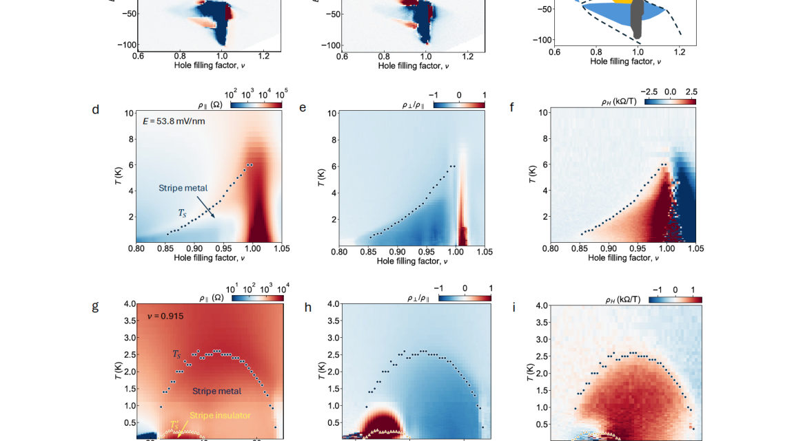
<figcaption class="paper-figure-caption"><b>Fig 2.</b> Figure 2 | Emergent stripe phases from doping a Mott insulator. a, b, Transverse resistivity 𝜌# as a function of 𝜈 and 𝐸 at 𝑇= 20mK and 𝐵= 0T measured for two different transverse electrode pairs. The inset shows the Hall bar measurement geometry. c, Constructed stripe phase diagram versus 𝜈 and 𝐸. The grey, blue and yellow regions mark the Mott insulator, the stripe metal and the stripe insulator, respectively. The dashed lines mark the vHS and the doped Mott insulator regions. d-f, 𝜌∥ (d), 𝜌#/𝜌∥ (e) and 𝜌$ (f, measured at 𝐵= 100mT) as a function of 𝜈 and 𝑇 at constant 𝐸= 53.8mV/nm (horizontal dashed line in a). The doping dependence of the stripe metal transition temperature 𝑇&#x27; for 𝜈&lt; 1...</figcaption>
</figure>
<figure class="paper-figure-card">
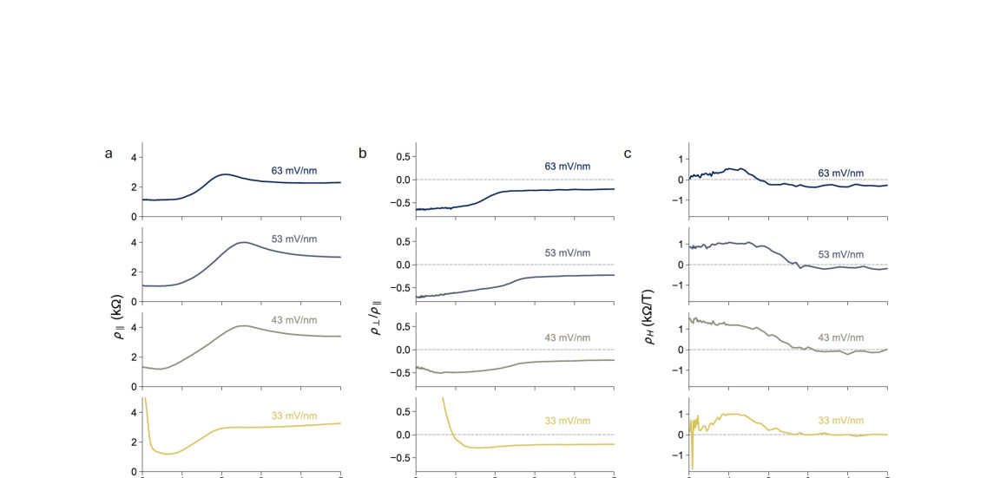
<figcaption class="paper-figure-caption"><b>Fig 3.</b> Figure 3 | Thermodynamic phase transitions for stripe phases. a-c, Temperature dependence of 𝜌∥ (a), 𝜌#/𝜌∥ (b) and 𝜌$ (c, measured at 𝐵= 100mT) at 𝜈= 0.915 and selected electric fields 𝐸= 33, 43, 53, 63mV/nm . A peak/bump in 𝜌∥ is observed at the stripe metal transition temperature 𝑇&#x27;, and is correlated with the onset for 𝜌#/𝜌∥ and 𝜌$. At 𝐸= 33mV/nm, a second thermodynamic phase transition to a stripe insulator is observed at 𝑇&#x27;</figcaption>
</figure>
<figure class="paper-figure-card">

<figcaption class="paper-figure-caption"><b>Fig 4.</b> Figure 4 | Insulating stripe phase and sliding density wave transport. a, Temperature dependence of 𝜌∥ (solid) and 𝜌#/𝜌∥ (dashed) for an insulating stripe phase at 𝜈= 0.915 and 𝐸= 36V/nm (𝐵= 0T). The arrow marks the stripe insulator transition temperature 𝑇&#x27;</figcaption>
</figure>
<figure class="paper-figure-card">

<figcaption class="paper-figure-caption"><b>Fig 5.</b> Figure 5 | Stripe insulator-to-superconductor transition. a, 𝜌∥ as a function of 𝐸 and 𝑇 at 𝜈= 0.937 (𝐵= 0T). The electric field dependence of the superconducting 𝑇- (green), 𝑇&#x27;</figcaption>
</figure>
</div>

<p><strong>Summary.</strong> This work uses twisted bilayer WSe2 to study the physics of doped Mott insulators, focusing on the emergence of electronic stripe phases. Through detailed transport measurements, the authors map out the phase diagram, revealing a sequence of transitions from an isotropic metal to a stripe phase, and ultimately to a superconducting state. This work provides a crucial platform for understanding intertwined electronic orders in correlated materials.</p>
<p><strong>Why it may be interesting.</strong> The study provides experimental realization of correlated electron physics in a tunable moiré platform, directly addressing the interplay between competing orders (stripes vs. superconductivity) which is a major theme in strongly correlated systems.</p>
<details>
<summary>Detailed structure</summary>
<p><strong>Main problem.</strong> The paper investigates the complex relationship between electronic liquid crystal states (like stripe phases) and the emergence of high-temperature superconductivity in doped Mott insulators.</p>
<p><strong>Main result.</strong> The authors report clear evidence for the generic appearance of stripe phases and observe a continuous quantum phase transition from the stripe phase into the superconducting state in twisted bilayer WSe2.</p>
<p><strong>Method.</strong> The study relies heavily on low-temperature, multi-parameter electrical transport measurements, including longitudinal resistivity, Hall coefficient, and anisotropic resistivity tensor measurements.</p>
<p><strong>Model / system.</strong> The physical system is a moiré semiconductor formed by twisted bilayer WSe2, which is modeled as a doped Mott insulator, allowing for the study of correlated electron physics near half-filling.</p>
<p><strong>Key observables.</strong> Longitudinal resistivity (rho_||), anisotropic resistivity (rho_#), Hall coefficient (rho_s), and the temperature-dependent transport anisotropy ratio (xi_||).</p>
<p><strong>Important parameters / regimes.</strong> Hole doping density (nu), perpendicular electric field (E), and temperature (T) are the primary tunable parameters used to map out the phase diagram.</p>
<p><strong>Assumptions / limitations.</strong> The stripe direction is noted to be potentially oriented by unintentional strain, and the analysis sometimes relies on fitting temperature dependencies to extract critical exponents.</p>
<p><strong>Figures summary.</strong> Figures map out phase diagrams showing transitions between Mott insulator, stripe metal, stripe insulator, and superconducting regimes, supported by characteristic changes in resistivity and anisotropy measurements.</p>
<p><strong>Paper structure.</strong> The paper systematically presents evidence for the stripe phase emergence via transport anisotropy, details the two-step transition (metal to stripe metal, then stripe metal to stripe insulator), and culminates in mapping the continuous quantum phase transition from the stripe phase to the superconductor.</p>
</details>
<details>
<summary>Abstract</summary>
<p>Electronic liquid crystals, such as stripe phases and nematics, are self-organized states of matter with spontaneously broken rotational symmetry. They are expected to emerge in a doped Mott insulator as a compromise between short- and long-range Coulomb interactions, and are believed to be intimately connected to the emergence of high temperature superconductivity either as a competing order or an intertwined order. Moiré semiconductors provide a controllable platform to explore the relationship between stripe phases and superconductivity near a Mott insulator. Here we report the generic appearance of stripe phases in a doped moiré Mott insulator and the observation of a stripe to-superconductor quantum phase transition in twisted bilayer WSe2. The stripe phases were revealed by electrical transport studies as a thermodynamic phase transition from a high temperature isotropic phase to a low-temperature anisotropic phase accompanied by a Fermi surface reconstruction. Near the stripe-to-superconductor transition, we also observed an additional thermodynamic phase transition from metallic stripes to pinned insulating stripes. The stripe-to-superconductor transition further exhibits an intriguing self-similarity that highlights the intimate relationship between the two orders. Our results pave the path for studying intertwined orders in moiré materials.</p>
</details>
<p><sub><a href="#top">↑ back to top</a></sub></p>

<p><a id="paper-2610.40405"></a></p>
<h3 id="fault-tolerant-heisenberg-limited-quantum-metrology-with-bosonic-probes"><a href="http://arxiv.org/abs/2610.40405v1">Fault-Tolerant Heisenberg-Limited Quantum Metrology with Bosonic Probes</a></h3>
<p><strong>Authors:</strong> Daniel G. Li, Lorcán O Conlon, Yu-Xin Wang, Erfan Abbasgholinejad, Twesh Upadhyaya, Alexey V. Gorshkov<br>
<strong>Type:</strong> theory · <strong>Category:</strong> quantum information and computing · <strong>PDF:</strong> <a href="https://arxiv.org/pdf/2610.40405v1">https://arxiv.org/pdf/2610.40405v1</a><br>
<strong>Analysis basis:</strong> full PDF text, analyzed in chunks
<strong>Topic relevance:</strong> <code>quantum measurements</code> <strong>3/5</strong></p>
<div class="figure-strip-hint">↔ Scroll figures horizontally</div>
<div class="paper-figures-scroll">
<figure class="paper-figure-card">

<figcaption class="paper-figure-caption"><b>Fig 1.</b> Low-resolution page preview, page 2</figcaption>
</figure>
<figure class="paper-figure-card">

<figcaption class="paper-figure-caption"><b>Fig 2.</b> Low-resolution page preview, page 3</figcaption>
</figure>
<figure class="paper-figure-card">

<figcaption class="paper-figure-caption"><b>Fig 3.</b> Low-resolution page preview, page 4</figcaption>
</figure>
<figure class="paper-figure-card">

<figcaption class="paper-figure-caption"><b>Fig 4.</b> Low-resolution page preview, page 5</figcaption>
</figure>
<figure class="paper-figure-card">

<figcaption class="paper-figure-caption"><b>Fig 5.</b> Low-resolution page preview, page 6</figcaption>
</figure>
</div>

<p><strong>Summary.</strong> This paper develops a fault-tolerant quantum sensing protocol for estimating displacements using bosonic probes. It uses quantum error correction codes to protect the encoded logical phase against environmental dephasing and hardware errors. The key achievement is demonstrating that the sensing precision can maintain Heisenberg scaling over much longer interrogation times than previously possible in noisy environments.</p>
<p><strong>Why it may be interesting.</strong> This work provides a concrete, resource-aware framework for designing practical quantum sensors, directly addressing the gap between theoretical Heisenberg limits and noisy, physical implementations using bosonic systems.</p>
<details>
<summary>Detailed structure</summary>
<p><strong>Main problem.</strong> The paper addresses the challenge of achieving high-precision quantum measurements (Heisenberg scaling) using bosonic probes while maintaining robustness against environmental noise and hardware errors.</p>
<p><strong>Main result.</strong> A fault-tolerant protocol is proposed that successfully suppresses logical failures due to noise, allowing the Fisher information to scale as $NT^2$ over interrogation times significantly longer than those achievable by non-fault-tolerant methods.</p>
<p><strong>Method.</strong> The authors employ quantum error correction codes (specifically, a repetition code) to encode the logical phase in a qubit register, coupled to a bosonic probe undergoing controlled displacements and parity measurements.</p>
<p><strong>Model / system.</strong> The system involves a bosonic probe mode coupled to a repetition-encoded qubit register. The dynamics are governed by a signal Hamiltonian for displacement estimation, and noise is modeled as Markovian photon-number dephasing and circuit-level bit-flip errors.</p>
<p><strong>Key observables.</strong> Fisher Information ($F_C$), logical relative phase, and the error budget ($\eta_M$).</p>
<p><strong>Important parameters / regimes.</strong> Mean photon number budget ($N$), total sensing time ($T$), dephasing rate ($\gamma_A$), and code distance ($d$).</p>
<p><strong>Assumptions / limitations.</strong> The analysis relies on specific fault models (e.g., independent error probabilities for gates) and assumes the ability to perform syndrome measurements and resets without erasing the stored logical phase.</p>
<p><strong>Paper structure.</strong> The paper builds from establishing the ideal, noise-free Heisenberg scaling, to incorporating bosonic dephasing, and finally developing rigorous bounds on the classical Fisher Information by averaging over complex histories of circuit faults and noise.</p>
</details>
<details>
<summary>Abstract</summary>
<p>Quantum sensors have been shown to enable more precise measurements than classical sensors. By using entanglement and coherent evolution, the estimation error can be made to scale better in interrogation time, photon count, and other resources, achieving Heisenberg-limited scaling. However, environmental noise and hardware errors typically destroy the coherence of the sensitive quantum states. This motivates the use of fault-tolerant techniques to create more robust quantum sensing protocols. Such fault-tolerant quantum sensing approaches have been shown to enhance sensitivity for qubit systems, but many practical sensors require bosonic probes. In this paper, we propose a fault-tolerant protocol using bosons to estimate displacements in the presence of dephasing noise. We construct an optimal error-correcting code under a mean photon-number constraint. Controlled displacements couple the probe to a repetition-encoded qubit register, while repeated boson-parity measurements and resets remove probe noise without erasing the stored logical phase. Under circuit-level bit-flip noise, a distance-$d$ code suppresses logical failures to order $p^{(d+1)/2}$. We show that, for a decay rate $γ_A$, a total sensing time $T$ and a mean photon number budget $N$, and for sufficiently small residual signals, the Fisher information scales as $NT^2$ over interrogation times of order $γ_A^{-(d+1)/2}$. This is a significant improvement over the non-fault-tolerant approach that achieves Heisenberg scaling only for a total time $\mathcal O(γ_A^{-1})$.</p>
</details>
<p><sub><a href="#top">↑ back to top</a></sub></p>

<p><a id="paper-2610.39669"></a></p>
<h3 id="high-field-heat-capacity-of-atacamite-cumath527mathclohmath528math-for-math529math-axis-from-antiferromagnetic-order-to-correlated-disorder"><a href="http://arxiv.org/abs/2610.39669v1">High-Field Heat Capacity of Atacamite Cu$_2$Cl(OH)$_3$ for $\mathbf{H} \parallel b$ axis: From Antiferromagnetic Order to Correlated Disorder</a></h3>
<p><strong>Authors:</strong> L. Stödter, A. Demuer, T. Kotte, A. U. B. Wolter, B. Büchner, K. C. Rule, S. Süllow<br>
<strong>Type:</strong> experiment · <strong>Category:</strong> strongly correlated electrons · <strong>PDF:</strong> <a href="https://arxiv.org/pdf/2610.39669v1">https://arxiv.org/pdf/2610.39669v1</a><br>
<strong>Analysis basis:</strong> full PDF text, analyzed in chunks
<strong>Topic relevance:</strong> <code>analog quantum simulation</code> <strong>3/5</strong></p>
<div class="figure-strip-hint">↔ Scroll figures horizontally</div>
<div class="paper-figures-scroll">
<figure class="paper-figure-card">

<figcaption class="paper-figure-caption"><b>Fig 1.</b> FIG. 1. (a)–(b) Magnetic specific heat of atacamite, plotted as cmag/T, measured in fields up to 35 T (H ∥b axis) for the field regions (a) of the AFM phase (together with the zero-field reference) and (b) beyond the AFM phase. (c) Magnetic entropy, calculated from the applied-field heat-capacity data, as function of temperature.</figcaption>
</figure>
<figure class="paper-figure-card">

<figcaption class="paper-figure-caption"><b>Fig 2.</b> FIG. 2. Specific heat, plotted as ln(cmag) over 1/T, for the data recorded in the field region beyond the AFM phase. The line denotes a linear fit to the low-temperature behavior of the 32 T-data resulting in a slope of −1.31.</figcaption>
</figure>
</div>

<p><strong>Summary.</strong> This work reports on high-field heat capacity measurements of the frustrated magnet atacamite. The research documents the magnetic transition from an ordered antiferromagnetic state to a field-induced, disordered state above 32 T. The observation of exponential heat capacity decay strongly suggests the opening of a spin gap, characterizing the material as a quantum magnet near a quantum critical point.</p>
<p><strong>Why it may be interesting.</strong> The study provides experimental evidence of a quantum phase transition in a geometrically frustrated magnet, exhibiting signatures of spin-liquid behavior, which is highly relevant for understanding exotic quantum ground states in correlated materials.</p>
<details>
<summary>Detailed structure</summary>
<p><strong>Main problem.</strong> The study investigates the magnetic phase transition in the frustrated sawtooth-chain compound atacamite under high magnetic fields, tracing the evolution from antiferromagnetic order to a field-induced disordered state.</p>
<p><strong>Main result.</strong> The sharp AFM transition anomaly disappears in high fields, replaced by a broad anomaly and low-temperature heat capacity exhibiting exponential behavior, consistent with a field-induced spin-liquid-like state.</p>
<p><strong>Method.</strong> Heat capacity measurements ($C_{	ext{mag}}$) were performed up to 35 T, analyzed by observing temperature and field dependence, and low-temperature data were fitted to an exponential form.</p>
<p><strong>Model / system.</strong> The system is atacamite ($  ext{Cu}_2   ext{Cl}(    ext{OH})_3$), modeled using a quantum sawtooth chain Hamiltonian incorporating basal and apical spin interactions. Measurements are conducted on the $H \parallel b$ axis.</p>
<p><strong>Key observables.</strong> Magnetic specific heat ($C_{	ext{mag}}$), magnetic entropy ($S_{	ext{mag}}$), and the temperature dependence of $C_{	ext{mag}}$ at low temperatures.</p>
<p><strong>Important parameters / regimes.</strong> High magnetic fields (up to 35 T), critical fields for QPT ($\sim 31.5 	ext{ T}$ for $H \parallel b$), and the extracted spin gap parameter ($\Delta_{	ext{PM}}$).</p>
<p><strong>Assumptions / limitations.</strong> The low-temperature behavior is assumed to be governed by thermal activation over a spin gap, and the high-field state is modeled by the decoupling of basal and apical spin subsystems.</p>
<p><strong>Figures summary.</strong> Figures show the magnetic specific heat versus temperature and field, illustrating the shift of the transition anomaly and the exponential decay of $C_{	ext{mag}}$ at low T in high fields.</p>
<p><strong>Paper structure.</strong> The paper first establishes the experimental setup and the theoretical model (sawtooth chain Hamiltonian). It then presents the observation of the AFM transition anomaly at low fields, followed by the key findings in high fields, where the transition vanishes and exponential behavior emerges, linking this to spin decoupling.</p>
</details>
<details>
<summary>Abstract</summary>
<p>We present the heat capacity of the frustrated sawtooth-chain compound atacamite Cu$_2$Cl(OH)$_3$ in high magnetic fields up to 35 T for $\mathbf{H} \parallel b$ axis. We clearly observe the change from antiferromagnetic long-range order, indicated by a sharp transition anomaly shifted to lower temperatures when increasing field, to a field-induced spin-liquid-like state with the absence of any transition anomaly. Here, in highest magnetic fields above 32 T a broad anomaly is present which is shifted to higher temperatures as the field is increased. The low-temperature heat capacity in the high-field region can be described well by an exponential behavior indicating a thermal activation over a spin gap. The findings are consistent with our scenario for the high-field state in atacamite for $\mathbf{H} \parallel c$ axis, where we proposed the sawtooth chains to decouple into two spin subsystems, basal and apical spin sites, leading to a partially polarized state with $M \sim M_\mathrm{sat}/2$.</p>
</details>
<p><sub><a href="#top">↑ back to top</a></sub></p>

<p><a id="paper-2610.40052"></a></p>
<h3 id="identifying-logical-operations-from-syndrome-histories-for-qldpc-codes"><a href="http://arxiv.org/abs/2610.40052v1">Identifying Logical Operations from Syndrome Histories for qLDPC Codes</a></h3>
<p><strong>Authors:</strong> Yizhuo Tan, Shifan Xu, Yongshan Ding, Jakub Szefer<br>
<strong>Type:</strong> theory · <strong>Category:</strong> quantum information and computing · <strong>PDF:</strong> <a href="https://arxiv.org/pdf/2610.40052v1">https://arxiv.org/pdf/2610.40052v1</a><br>
<strong>Analysis basis:</strong> full PDF text, analyzed in chunks
<strong>Topic relevance:</strong> <code>quantum measurements</code> <strong>3/5</strong></p>
<div class="figure-strip-hint">↔ Scroll figures horizontally</div>
<div class="paper-figures-scroll">
<figure class="paper-figure-card">

<figcaption class="paper-figure-caption"><b>Fig 1.</b> Fig. 1. Error transport can make candidate automorphisms distinguishable. The same detectable Pauli error et is present before either candidate auto- morphism. The two automorphisms transport the error to different data qubits, producing different syndromes at the next SEC.</figcaption>
</figure>
<figure class="paper-figure-card">

<figcaption class="paper-figure-caption"><b>Fig 2.</b> Fig. 2. Comparison of error decoding and logical-operation identification. (a) Error decoding assumes the executed circuit is known and uses the syndrome history to determine a correction or Pauli-frame update for unknown errors. (b) Logical-operation identification assumes both the executed circuit and errors are unknown, and uses the same syndrome history, optionally supplemented by auxiliary measurement outcomes, to identify the logical operations.</figcaption>
</figure>
<figure class="paper-figure-card">

<figcaption class="paper-figure-caption"><b>Fig 3.</b> Fig. 3. Coupling across a noisy syndrome history. The circuit interval contains one automorphism operation g followed by syndrome extraction. Interval fault pattern Ft determines new data error ut and measurement error mt. Together with the existing data error et−1 transported by g, these effects determine the current data error et and the measured syndrome yt. Since et becomes input to the next operation-SEC interval, adjacent syndromes are coupled and cannot be scored independently.</figcaption>
</figure>
<figure class="paper-figure-card">

<figcaption class="paper-figure-caption"><b>Fig 4.</b> Fig. 4. Exact automorphism identification. (a) For candidate sequence h and incoming hidden boundary state bt−1, the method sums the probabilities of interval fault patterns F 1 t , F 2 t , . . . that produce measured syndrome yt and outgoing hidden boundary state bt, yielding the transition probability Kh t (yt, bt | bt−1). (b) Transition probabilities are composed across syndrome boundaries. Probabilities associated with the same hidden boundary state are summed before the next circuit interval, yielding the candidate likelihood P(Y | h). (c) Prior-weighted candidate likelihoods are summed over candidate sequences that share recovery target c = τ(h), yielding the unnormalized target...</figcaption>
</figure>
<figure class="paper-figure-card">

<figcaption class="paper-figure-caption"><b>Fig 5.</b> Fig. 5. Scalable automorphism identification. The scalable method follows the same three steps as the exact method while limiting the fault-pattern and hidden-boundary-state spaces. (a) For candidate sequence h and incoming hidden boundary state bt−1, up to BF selected interval fault patterns are evaluated to construct the approximate transition probability e Kh t (yt, bt | bt−1). (b) The resulting probabilities are propagated and summed for equal hidden boundary states, after which up to BS states are retained for the next circuit interval. Repeating this step gives the approximate candidate likelihood eP(Y | h). (c) Approximate candidate likelihoods are combined over candidate sequences...</figcaption>
</figure>
</div>

<p><strong>Summary.</strong> This paper shows that syndrome histories from quantum error correction codes can be used not just to correct errors, but also to deduce the specific logical operations that were executed. By developing advanced inference methods, the authors achieve high accuracy in identifying complex quantum circuits, suggesting that the measurement record itself is a rich source of information about the computation's history.</p>
<p><strong>Why it may be interesting.</strong> This work provides a powerful diagnostic tool for quantum computation, suggesting that the measurement record itself can act as a forensic tool to reconstruct the computational history, which is relevant for understanding decoherence and process verification in quantum hardware.</p>
<details>
<summary>Detailed structure</summary>
<p><strong>Main problem.</strong> The paper addresses the problem of identifying which logical operations or circuits were executed during fault-tolerant quantum computation using only syndrome histories or by combining them with classical measurement outcomes.</p>
<p><strong>Main result.</strong> The authors achieved high identification accuracies (e.g., &gt;94% for single instructions) by analyzing syndrome histories, demonstrating that syndromes reveal information beyond simple error decoding.</p>
<p><strong>Method.</strong> They developed an exact inference method and a scalable approximation to calculate candidate likelihoods, accounting for unknown circuit faults and measurement randomness.</p>
<p><strong>Model / system.</strong> The study uses Quantum Low-Density Parity-Check (qLDPC) codes, specifically Bivariate Bicycle (BB) codes, to model the physical system undergoing fault-tolerant computation.</p>
<p><strong>Key observables.</strong> Syndrome histories (Y), classical measurement outcomes from logical Pauli measurements and T injections, and the identification accuracy (%) of the executed operation.</p>
<p><strong>Important parameters / regimes.</strong> Error rates between $10^{-5}$ and $10^{-3}$; code sizes like $  ext{[[18,4,2]]}$ and $  ext{[[72,12,6]]]}$</p>
<p><strong>Assumptions / limitations.</strong> The methods account for unknown circuit faults and ideal measurement randomness, though ambiguities remain due to insufficient measurement information or approximation limitations.</p>
<p><strong>Figures summary.</strong> Figures illustrate how error transport via automorphisms distinguishes candidate operations (Fig. 1) and compare the results of standard error decoding versus logical-operation identification (Fig. 2).</p>
<p><strong>Paper structure.</strong> The work introduces the problem, details the use of syndrome histories and auxiliary measurements, presents the inference methods, evaluates performance on specific codes and operations (automorphisms, Pauli measurements, T injections), and discusses limitations and refinements.</p>
</details>
<details>
<summary>Abstract</summary>
<p>Syndrome histories are normally used to detect and correct errors in fault-tolerant quantum computation, but they can also reveal information about the logical operations executed during computation. We study logical-operation identification using syndrome histories alone or together with other classical measurement outcomes. We develop an exact inference method and a scalable approximation that account for unknown circuit faults and ideal measurement randomness. We evaluate automorphisms, logical Pauli measurements, T injections, and logical circuits combining these instructions on \([[18,4,2]]\) and \([[72,12,6]]\) bivariate bicycle (BB) codes under multiple noise models and error rates. A single logical instruction can be identified with over 94\% accuracy under circuit-level noise with error rates between \(10^ {-5} \) and \(10^{-3}\). We also achieve over 99\% accuracy for automorphism-based logical circuits and 78.32\% for logical circuits combining all three instructions. We further analyze identification ambiguities arising from insufficient or indistinguishable measurement information, fault timing, and approximation inference. Together, these results extend the role of syndromes beyond error decoding to identifying executed logical operations and circuits during fault-tolerant quantum computation. They also suggest that access to syndrome histories and related classical measurement outcomes may unintentionally reveal information about the executed computation.</p>
</details>
<p><sub><a href="#top">↑ back to top</a></sub></p>

<p><a id="paper-2610.38808"></a></p>
<h3 id="key-evaluation-of-a-relativistic-quantum-key-distribution-over-a-turbulent-free-space-optical-channel"><a href="http://arxiv.org/abs/2610.38808v1">Key Evaluation of a Relativistic Quantum Key Distribution Over a Turbulent Free-space Optical Channel</a></h3>
<p><strong>Authors:</strong> G. Bebrov<br>
<strong>Type:</strong> theory · <strong>Category:</strong> quantum information and computing · <strong>PDF:</strong> <a href="https://arxiv.org/pdf/2610.38808v1">https://arxiv.org/pdf/2610.38808v1</a><br>
<strong>Analysis basis:</strong> full PDF text, analyzed in chunks
<strong>Topic relevance:</strong> <code>interference shaping light</code> <strong>3/5</strong></p>
<div class="figure-strip-hint">↔ Scroll figures horizontally</div>
<div class="paper-figures-scroll">
<figure class="paper-figure-card">

<figcaption class="paper-figure-caption"><b>Fig 1.</b> Fig. 1: Interferometric setup of single–photon RQKD. BS—beamsplitter; M—mirror; D—detector; ϕa(b)—phase shift induced by Alice (Bob); r—interferometer arms sep- aration. Note that a vacuum state (|0⟩b) is fed into input b.</figcaption>
</figure>
<figure class="paper-figure-card">

<figcaption class="paper-figure-caption"><b>Fig 2.</b> Fig. 2: Spacetime diagram of the single-photon RQKD setup. The setup is placed on P (V WUQ) plane. Note that the dashed lines represent planes of constant time t = ti. The time interval ∆T is a function of the arms separation r (∆T ∝r). Only the destructive (key-generation, relevant) output of BSf is depicted.</figcaption>
</figure>
<figure class="paper-figure-card">

<figcaption class="paper-figure-caption"><b>Fig 3.</b> Fig. 3: Setup of coherent–state RQKD. BS—beamsplitter; M—mirror; D—detector; φa(b)—phase shift induced by Alice (Bob); r—interferometer arms separation. System A′ identifies the signal coherent state, whereas B′ identifies the reference coherent state. The intensity of the coherent states is denoted by µ. Two detectors are involved in the scheme: detector D−at which a click takes place if signal and coherent states interfere in a destructive manner (the states are out of phase); detector D−at which a click takes place if signal and coherent states interfere in a destructive manner (the states are out of phase).</figcaption>
</figure>
<figure class="paper-figure-card">

<figcaption class="paper-figure-caption"><b>Fig 4.</b> Fig. 4: Spacetime diagram of the coherent-state RQKD setup. The setup is placed on P (V WUQ) plane. Note that the dashed lines represent planes of constant time t = ti. The time interval ∆T is a function of the arms separation r (∆T ∝r). Only the destructive (key-generation, relevant) output of BSf is depicted.</figcaption>
</figure>
<figure class="paper-figure-card">

<figcaption class="paper-figure-caption"><b>Fig 5.</b> Fig. 6: Key–rate of a single–photon RQKD over a turbulent FSO channel. Three scenarios are considered: (i) r = r0</figcaption>
</figure>
</div>

<p><strong>Summary.</strong> This work quantifies the impact of atmospheric turbulence on Relativistic Quantum Key Distribution (RQKD) over free-space optical links. By modeling phase fluctuations, the authors show that while single-photon protocols are robust, coherent-state implementations face a critical threshold due to turbulence. The findings provide essential guidelines for designing reliable quantum communication systems in atmospheric channels.</p>
<p><strong>Why it may be interesting.</strong> It directly addresses the practical limitations of quantum communication protocols in realistic atmospheric environments, which is crucial for quantum optics and quantum networking research.</p>
<details>
<summary>Detailed structure</summary>
<p><strong>Main problem.</strong> The paper evaluates the performance of Relativistic Quantum Key Distribution (RQKD) when transmitted over a turbulent Free-space Optical (FSO) channel.</p>
<p><strong>Main result.</strong> Atmospheric turbulence degrades key rate by reducing interference visibility; the single-photon protocol remains robust, while the coherent-state implementation fails beyond a critical interferometer geometry.</p>
<p><strong>Method.</strong> A theoretical model incorporating turbulence-induced phase fluctuations is developed, followed by numerical simulations to analyze the achievable secret-key rate.</p>
<p><strong>Model / system.</strong> The system involves interferometric setups for both single-photon and weak coherent-state RQKD protocols transmitted through a turbulent FSO channel.</p>
<p><strong>Key observables.</strong> Secret-key rate, interference visibility, Quantum Bit Error Rate (QBER).</p>
<p><strong>Important parameters / regimes.</strong> Interferometer-arm separation ($r$ or $\Delta T$), Fried's parameter, turbulence variance ($\sigma^2_\phi$), and channel transmissivity ($\eta$).</p>
<p><strong>Assumptions / limitations.</strong> The analysis assumes independent fluctuations for phase components and uses asymptotic limits for key rate calculations.</p>
<p><strong>Figures summary.</strong> Figures illustrate the interferometric setups for both single-photon and coherent-state RQKD, along with spacetime diagrams showing the time evolution of the quantum states.</p>
<p><strong>Paper structure.</strong> The paper develops the theoretical model, analyzes the key rate expressions for both single-photon and coherent-state regimes, derives the impact of turbulence on detection probability and error rates, and concludes with practical guidelines.</p>
</details>
<details>
<summary>Abstract</summary>
<p>We investigate the performance of relativistic quantum key distribution (RQKD) over turbulent free-space optical channels for both single-photon and coherent-state implementations. A theoretical model is developed to describe the effect of atmospheric turbulence on interferometric visibility and secret-key generation by incorporating turbulence-induced phase fluctuations into the key-rate analysis. Numerical simulations are performed under realistic channel conditions to evaluate the achievable communication distance and secret-key rate. The results show that atmospheric turbulence degrades the protocol performance by reducing interference visibility, with the severity of the degradation determined by the ratio between the interferometer-arm separation $r$ (or temporal separation of signal and reference states $ΔT$) and Fried's parameter. The single-photon protocol remains operational over all investigated turbulence regimes, whereas the coherent-state implementation exhibits a critical dependence on the interferometer geometry (especially on $ΔT$), leading to a threshold beyond which secure key generation is no longer possible. These findings quantify the impact of atmospheric turbulence on relativistic quantum key distribution and provide practical guidelines for the design and optimization of free-space RQKD systems.</p>
</details>
<p><sub><a href="#top">↑ back to top</a></sub></p>

<p><a id="paper-2610.40523"></a></p>
<h3 id="on-the-gauge-invariant-orbital-angular-momentum-of-vector-optical-vortices-in-the-paraxial-approximation-and-beyond"><a href="http://arxiv.org/abs/2610.40523v1">On the gauge-invariant orbital angular momentum of vector optical vortices in the paraxial approximation and beyond</a></h3>
<p><strong>Authors:</strong> E. V. Maliutina, E. A. Vashukevich, V. A. Leonov, D. D. Reshetnikov, T. Yu. Golubeva<br>
<strong>Type:</strong> theory · <strong>Category:</strong> other · <strong>PDF:</strong> <a href="https://arxiv.org/pdf/2610.40523v1">https://arxiv.org/pdf/2610.40523v1</a><br>
<strong>Analysis basis:</strong> full PDF text, analyzed in chunks
<strong>Topic relevance:</strong> <code>interference shaping light</code> <strong>3/5</strong></p>
<div class="figure-strip-hint">↔ Scroll figures horizontally</div>
<div class="paper-figures-scroll">
<figure class="paper-figure-card">

<figcaption class="paper-figure-caption"><b>Fig 1.</b> Figure 1. Dependence of the gauge-invariant orbital angular momentum on the inverse nonparaxiality parameter for vari- ous values of the topological charge 𝑙</figcaption>
</figure>
</div>

<p><strong>Summary.</strong> This paper introduces a gauge-invariant framework to calculate the orbital and spin angular momenta of vector optical vortices. It successfully separates the total angular momentum into two distinct components: one related to the phase structure and another related to the polarization inhomogeneity. This advancement is crucial for accurately modeling light beams beyond the simple paraxial approximation.</p>
<p><strong>Why it may be interesting.</strong> This work provides rigorous mathematical tools to quantify angular momentum in complex light fields, which is fundamental for understanding light-matter interactions and quantum state manipulation in quantum optics.</p>
<details>
<summary>Detailed structure</summary>
<p><strong>Main problem.</strong> The paper develops a gauge-invariant formalism to accurately describe the spin and orbital angular momenta (OAM) of both scalar and vector optical vortices, especially beyond the paraxial approximation.</p>
<p><strong>Main result.</strong> The OAM of vector vortices is shown to have two distinct physical contributions: one related to the phase singularity (polarization-independent) and another proportional to the helical topological charge (polarization-dependent).</p>
<p><strong>Method.</strong> The authors construct gauge-invariant quantities by incorporating non-local corrections to the vector potential, solving related Poisson equations in Fourier space, and employing Borel regularization for divergent asymptotic series.</p>
<p><strong>Model / system.</strong> The system under study is vector optical vortices, characterized by a vector potential A, which can be analyzed for arbitrary multimode fields with spatially inhomogeneous polarization.</p>
<p><strong>Key observables.</strong> Gauge-invariant Orbital Angular Momentum ($\mathcal{L}_{inv}$), Spin Angular Momentum ($\mathcal{S}_{inv}$), and the total angular momentum ($\mathcal{J}_{inv}$).</p>
<p><strong>Important parameters / regimes.</strong> Topological charge ($l$), Helicity ($\sigma$), and the helical topological charge ($w$). The nonparaxiality parameter $\xi$ is also crucial.</p>
<p><strong>Assumptions / limitations.</strong> The formalism requires careful handling of gauge invariance, and the derived series expansions are asymptotic, necessitating Borel regularization for physical interpretation.</p>
<p><strong>Paper structure.</strong> The paper progresses by first establishing the need for gauge invariance in angular momentum calculations, deriving the gauge-invariant potentials, and then applying this formalism to separate the OAM into polarization-independent and polarization-dependent components for multimode fields.</p>
</details>
<details>
<summary>Abstract</summary>
<p>In this paper we present a gauge-invariant formalism for describing the spin and orbital angular momenta of scalar and vector optical vortices. The correction term, arising from consistent incorporation of the transverse vector potential's nonlocality, restores gauge invariance and makes it possible to separate the total angular momentum into spin and orbital components. We propose a method for calculating the orbital and spin angular momenta of multimode vector vortex fields and show that the orbital angular momentum of such beams contains two qualitatively different components. The polarization-independent contribution to the orbital angular momentum is related to the topological charge that determines the order of the phase singularity, while the polarization-dependent one is proportional to the helical topological charge that determines the spatial inhomogeneity of the polarization. We also discuss the quantization procedure for fields with spatially inhomogeneous polarization in terms of modes with a helical topological charge, and examine the limits of applicability of the proposed formalism.</p>
</details>
<p><sub><a href="#top">↑ back to top</a></sub></p>

<p><a id="paper-2610.40393"></a></p>
<h3 id="quantum-computing-through-computational-imaging-representations-measurement-and-inference"><a href="http://arxiv.org/abs/2610.40393v1">Quantum Computing through Computational Imaging: Representations, Measurement, and Inference</a></h3>
<p><strong>Authors:</strong> George Kourousias, Sergio Carrato, Roberto Pugliese, Panagiotis Dimitrakis, Alberto Carini<br>
<strong>Type:</strong> theory · <strong>Category:</strong> quantum information and computing · <strong>PDF:</strong> <a href="https://arxiv.org/pdf/2610.40393v1">https://arxiv.org/pdf/2610.40393v1</a><br>
<strong>Analysis basis:</strong> full PDF text, analyzed in chunks
<strong>Topic relevance:</strong> <code>quantum measurements</code> <strong>3/5</strong></p>
<div class="figure-strip-hint">↔ Scroll figures horizontally</div>
<div class="paper-figures-scroll">
<figure class="paper-figure-card">

<figcaption class="paper-figure-caption"><b>Fig 1.</b> FIG. 1. One shot proceeds from preparation to readout; classical inference combines outcomes into an estimate or decision. Each stage specifies its access or resource cost; 𝑝(𝑘) depends on the preparation, circuit and measurement basis. The dashed return denotes new preparations for further acquisition, with optional classical parameter updates.</figcaption>
</figure>
<figure class="paper-figure-card">

<figcaption class="paper-figure-caption"><b>Fig 2.</b> FIG. 2. A single-qubit circuit and its ideal interference fringe. The phase gate alone leaves both probabilities at 1/2; the final Hadamard converts relative phase into outcome contrast. The continuous curve is a probability, estimated experimentally through repeated shots.</figcaption>
</figure>
<figure class="paper-figure-card">

<figcaption class="paper-figure-caption"><b>Fig 3.</b> FIG. 4. Delta-method phase variance divided by the local 1/(2𝑁) benchmark for 𝑁X and 𝑁Y measurements. The curve extends the regular-phase expression continuously to 𝜙= 𝑘𝜋/2, where determinis- tic outcomes require separate regularity treatment. The marker locates 𝜙= 2.30 rad.</figcaption>
</figure>
<figure class="paper-figure-card">

<figcaption class="paper-figure-caption"><b>Fig 4.</b> FIG. 5. Bell preparation and exact ideal outcome probabilities. 𝑍𝑍denotes computational readout of both qubits, and 𝑋𝑋denotes an 𝐻before each readout. The second setting distinguishes coherence that the first record does not reveal (ochre).</figcaption>
</figure>
<figure class="paper-figure-card">

<figcaption class="paper-figure-caption"><b>Fig 5.</b> FIG. 6. The four-pixel input and two classical labeling decisions. The top strip represents 𝑔𝑖by grayscale, with brighter cells denoting larger values. The outlined third label exposes the tradeoff between unary fit and boundary cost. A labeling specifies a four-qubit basis state; 1111 is the exact classical reference.</figcaption>
</figure>
</div>

<p><strong>Summary.</strong> This paper provides a comprehensive theoretical framework for analyzing quantum imaging models by separating the quantum state preparation, the measurement process, and the classical inference step. It argues that the computational output is dictated by this entire pipeline, not just the initial quantum state. The work establishes rigorous resource accounting principles applicable to quantum information processing and imaging.</p>
<p><strong>Why it may be interesting.</strong> It provides a deep, mathematically rigorous framework for assessing the true computational resource requirements of quantum imaging algorithms, which is crucial for understanding the practical limits of quantum sensing and reconstruction.</p>
<details>
<summary>Detailed structure</summary>
<p><strong>Main problem.</strong> To develop a rigorous framework distinguishing the computational output of quantum-enhanced imaging models by separating the quantum state representation, the measurement process, and the final classical inference/decision.</p>
<p><strong>Main result.</strong> The computational power is determined not just by the quantum state, but by the specific sequence of input access, measurement, and decoding steps, which must be accounted for in resource analysis.</p>
<p><strong>Method.</strong> The authors use complex linear algebra and probability theory to develop four technical distinctions between different encoding and readout methods for quantum imaging problems.</p>
<p><strong>Model / system.</strong> The model involves quantum states, represented by complex vectors, undergoing unitary transformations followed by measurement in the computational basis. The analysis compares amplitude encoding versus decision encoding for information processing.</p>
<p><strong>Key observables.</strong> Amplitudes ($\alpha, eta$), measurement probabilities ($ ext{Pr}(k) = |\psi_k|^2$), and the relative phase ($\phi$) between basis states.</p>
<p><strong>Important parameters / regimes.</strong> The resource cost associated with preparation, transformation, measurement, and classical computation.</p>
<p><strong>Assumptions / limitations.</strong> The derivations assume complex linear algebra and probability, explicitly avoiding prior knowledge of quantum mechanics, and focus on information access rather than arbitrary amplitude loading.</p>
<p><strong>Figures summary.</strong> Figure 1 illustrates the workflow from state preparation to classical inference, detailing resource costs. Table 1 summarizes the four technical distinctions governing computational power.</p>
<p><strong>Paper structure.</strong> The paper progresses by first establishing the fundamental limitations of algebraic correspondence, then developing four technical distinctions (e.g., data vs. decision encoding), illustrating these with interference experiments, and finally connecting these concepts to end-to-end resource accounting for quantum imaging proposals.</p>
</details>
<details>
<summary>Abstract</summary>
<p>An algebraic correspondence between an imaging model and a quantum state does not specify a computational method: input access, measurement and decoding determine what can be returned. This exposition develops four distinctions for computational-imaging and engineering readers. It separates amplitude encodings of input values from encodings of complete candidate labelings, explaining why amplitude storage does not provide full-array readout. Complex-field interference motivates unknown-phase inference: complementary measurements resolve ambiguities that local Fisher information alone does not detect. Reshaping joint amplitudes into a matrix connects singular-value decomposition to pure-state entanglement, while distinguishing Schmidt rank from conditions for efficient classical simulation. In a four-pixel segmentation, an objective becomes a cost operator and a sampling circuit. One layer of the quantum approximate optimization algorithm (QAOA) lowers mean energy from $1.675$ to $0.686$ relative to uniform sampling, yet makes a nonoptimal labeling more probable than the optimum 0.484 versus 0.365. Archived IBM and IQM measurements illustrate a separate six-variable local boundary decision. Low-rank state reconstruction and selected quantum algorithms connect these distinctions to an end-to-end resource account. The derivations and reproducible numerical references assume complex linear algebra and probability, without prior quantum mechanics. The accompanying Seeing Amplitudes browser laboratory supports interactive exploration; the article remains self-contained and connects each representation to the estimate or decision it permits and the resources that output requires.</p>
</details>
<p><sub><a href="#top">↑ back to top</a></sub></p>

<p><a id="paper-2610.39285"></a></p>
<h3 id="quantum-field-theory-with-scale-dependent-weighted-measures-nonlinear-momentum-representations-vacuum-fluctuations-and-causal-structure"><a href="http://arxiv.org/abs/2610.39285v1">Quantum field theory with scale-dependent weighted measures: nonlinear momentum representations, vacuum fluctuations, and causal structure</a></h3>
<p><strong>Authors:</strong> S. González-Salud, R. Cartas-Fuentevilla<br>
<strong>Type:</strong> theory · <strong>Category:</strong> other · <strong>PDF:</strong> <a href="https://arxiv.org/pdf/2610.39285v1">https://arxiv.org/pdf/2610.39285v1</a><br>
<strong>Analysis basis:</strong> full PDF text, analyzed in chunks
<strong>Topic relevance:</strong> <code>Keldysh / 2PI / non-Gaussian methods</code> <strong>3/5</strong></p>
<div class="figure-strip-hint">↔ Scroll figures horizontally</div>
<div class="paper-figures-scroll">
<figure class="paper-figure-card">

<figcaption class="paper-figure-caption"><b>Fig 1.</b> FIG. 1. Normalized spatial kernel for n = 2, D = 3 and different values of r. The Snyder value r = 4 is included for comparison; ultraviolet finiteness of the weighted energy requires r &gt; 4.</figcaption>
</figure>
<figure class="paper-figure-card">

<figcaption class="paper-figure-caption"><b>Fig 2.</b> FIG. 2. Coincident vacuum fluctuations for n = 2, D = 3, normalized by their massless values, as functions of m/Λ. All curves shown have finite field variance; the weighted vacuum energy is also finite when r &gt; 4.</figcaption>
</figure>
<figure class="paper-figure-card">

<figcaption class="paper-figure-caption"><b>Fig 3.</b> FIG. 3. Signed Pauli–Jordan commutator for D = 3, n = 2, r = 6, and m/Λ = 0.4, evaluated along T = (1 + a)X, T = X, and T = (1 −a)X, with a = 0.4, corresponding to the inside, on-cone, and outside regions, respectively. The left panel shows the behavior at smaller separations, while the right panel extends the comparison to larger distances. The gray dashed curves represent the leading stationary-phase envelopes ±A(ΛX)−3/2 of the timelike contribution. Its oscillatory behavior contrasts with the exponential suppression of the on-cone and spacelike amplitudes.</figcaption>
</figure>
<figure class="paper-figure-card">

<figcaption class="paper-figure-caption"><b>Fig 4.</b> FIG. 4. Massless Pauli–Jordan commutator for D = 3, n = 2, and r = 6. The left panel compares the signed amplitudes inside, on, and outside the light cone, using T = X + a/Λ, T = X, and T = X −a/Λ, respectively, with a = 0.4. The right panel shows the differences between the on-cone and inside amplitudes (solid curve), and between the inside and outside amplitudes (dashed curve), now taking T = (1 ± a)X. The latter difference remains positive, whereas the former changes sign, reflecting the transition between the short-distance and asymptotic hierarchies.</figcaption>
</figure>
</div>

<p><strong>Summary.</strong> This theoretical paper develops a novel framework for quantum field theory by modifying the standard momentum-space measure using a scale-dependent weight function. This modification successfully regularizes vacuum fluctuations and equal-time commutators, providing a method to handle UV divergences. The analysis highlights the trade-off between achieving finite observables and maintaining strict microcausality in the resulting field algebra.</p>
<p><strong>Why it may be interesting.</strong> While highly abstract, the techniques of modifying momentum space measures to tame UV divergences are foundational to modern quantum field theory, which is relevant for understanding effective field theories in condensed matter or high-energy physics.</p>
<details>
<summary>Detailed structure</summary>
<p><strong>Main problem.</strong> The paper reconsiders constructing free quantum fields by modifying the momentum-space measure to address ultraviolet (UV) divergences in QFT without relying solely on standard renormalization techniques.</p>
<p><strong>Main result.</strong> The proposed weighted measure allows for finite vacuum expectation values and finite equal-time commutators, though it results in suppressed spacelike correlations rather than strict microcausality.</p>
<p><strong>Method.</strong> The authors introduce a scale-dependent weighted measure, $d\mu_F(k)$, parameterized by a crossover scale $\Lambda$, and analyze its consequences for field observables like the two-point function and the Pauli-Jordan commutator.</p>
<p><strong>Model / system.</strong> The primary model is the complex Klein-Gordon field, analyzed in arbitrary spatial dimensions ($D$). The framework is extended to include observer-covariant weights dependent on a timelike four-velocity $u_\mu$.</p>
<p><strong>Key observables.</strong> Vacuum fluctuations, two-point functions, equal-time algebra, and the Pauli-Jordan commutator $\Delta_F^C(T, X)$.</p>
<p><strong>Important parameters / regimes.</strong> The weight function parameters ($n, r$), the energy scale $\Lambda$, and the mass $m$.</p>
<p><strong>Assumptions / limitations.</strong> The construction assumes that modifying the momentum measure is a viable path to UV finiteness, though the authors note this does not guarantee finiteness for the full interacting theory.</p>
<p><strong>Figures summary.</strong> Figures illustrate the spatial averaging kernel $K_F(X)$ and the behavior of the commutator $\Delta_F^C(T, X)$ in different spacetime regimes relative to the light cone.</p>
<p><strong>Paper structure.</strong> The paper progresses from defining the weighted measure and its relation to modified dispersion relations, through calculating conserved quantities and vacuum fluctuations, to analyzing the commutator structure in various spacetime separations, and finally discussing the implications for interacting extensions.</p>
</details>
<details>
<summary>Abstract</summary>
<p>We reconsider the construction of free quantum fields through momentum-space weighted measures, introducing an independent energy scale that restores the conventional theory at low momenta. The resulting family is characterized by a dimensionless spectral function and includes, as a distinguished case, the spatial weight associated with the Euclidean Snyder algebra. We discuss its relation to modified dispersion relations and nonlinear momentum coordinates, and introduce an observer-covariant spectral weight defined using a timelike four-velocity. For the complex Klein-Gordon field we obtain the equal-time algebra, conserved weighted observables, vacuum fluctuations, and two-point functions in arbitrary spatial dimension. The ultraviolet conditions for their finiteness are established, and the nonlocal causal structure is analyzed in terms of a spatial convolution of the ordinary Pauli-Jordan distribution. An illustrative interacting extension and numerical profiles of the kernels and amplitudes are also presented.</p>
</details>
<p><sub><a href="#top">↑ back to top</a></sub></p>
<hr>
<p>
<a href="index.html">← Index</a>
 · <a href="papers_03.html">← Previous</a> · <a href="papers_05.html">Next →</a>
</p>
<hr>

</body>
</html>
